五指灵巧手
重点INV Hand 五指灵巧手
📄 本文档由 INVrobot 产品文档中心生成，仅供参考。
© 深圳市英诺维信自动化设备有限公司 本仓库代码与文档采用 自定义商业禁止闭源协议 授权， 禁止用于商业闭源目的。未经授权，不得修改、再分发或用于商业用途。
1. 产品概述
INV Hand是英诺维信自主研发打造的高性能仿生灵巧手，整机搭载 20 个运动自由度，动作灵活度与仿生贴合度出众。特异化版采用模块化快换设计，通过快换方式实现不同功能。产品适配性强，可应用于科研实验研发、机器人系统集成、智能人机交互等诸多前沿领域。
2. 产品参数
INV Hand产品技术参数表涵盖结构设计、驱动控制、负载性能、动态响应、精度寿命、电气特性，供产品选型、仿真建模和应用集成参考。
| 参数分类 | 参数项 | 典型数值或描述 |
|---|---|---|
| 结构与自由度 | 主动自由度 | 16 |
| 被动自由度 | 4 | |
| 关节数量 | 20 | |
| 抓指构型 | 可全对指，支持侧摆 | |
| 运动学构型 | 旋转关节串联直驱，无非线性运动学关系 | |
| 最大抓握直径 | 110 mm | |
| 尺寸与重量 | 自重（不含线缆） | 560 ± 10 g |
| 尺寸 | 200 mm × 110 mm × 35 mm | |
| 驱动方式 | 驱动方式 | 部分自锁旋转直驱关节 |
| 控制算法 | FOC控制算法 | |
| 控制与通信 | 控制频率 | 1000 Hz × 16 轴 |
| 通信接口 | USB 2.0 | |
| 控制模式 | 力位混合控制 | |
| 通信协议 | CAN/CAN FD协议 | |
| 通信速率 | 480 Mbps | |
| 负载性能 | 指尖力 | 10 N |
| 动态性能 | 最小开合时间 | 0.3 s |
| 重复开合速度 | 3 times/s | |
| 拇指弯曲/侧摆速度 | 100 rpm | |
| 四指弯曲速度 | 0.15 s | |
| 精度与寿命 | 重复定位精度 | ± 1 mm |
| 空载抓握寿命 | ≥ 300,000 次 | |
| 电气性能 | 工作电压 | 12V DC |
| 静态功耗 | 12 W | |
| 标配适配器规格 | 额定输出：12V 20A | |
| 峰值功率：320 W | ||
| 线缆规格：14 AWG | ||
| 材料与防护 | 外壳材质 | 铝合金 |
| 指尖材质 | 硅胶 | |
| 防护等级 | IP40 |
3. 产品结构特征
本节介绍 INV Hand 的整体结构设计、通信与电源接口排布，说明各自由度命名规范及运动参数，帮助用户了解产品机械构造与使用准则。
3.1. 结构示意图
INV Hand 采用五指仿生结构设计，每个手指包含4个关节，实现20自由度的灵活运动。下图展示整体结构及主要组成部分：
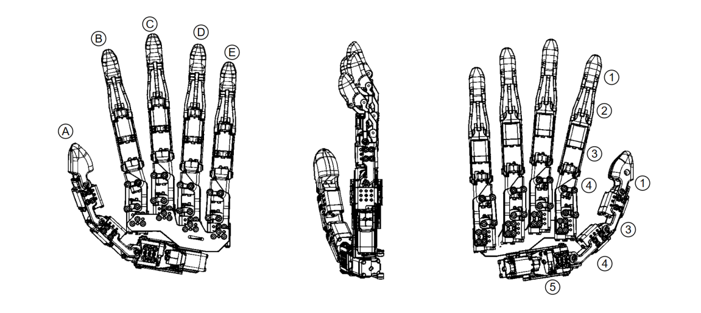
A~E分别对应不同手指：
A、拇指 (Thumb)
B、食指 (Index)
C、中指 (Middle)
D、无名指 (Ring)
E、小指 (Little)
图中序号1~5 对应手部常用解剖学标识：
1、远节指骨 (Distal phalanges)
2、中节指骨 (Intermediate phalanges)
3、近节指骨 (Proximal phalanges)
4、掌骨 (Metacarpals)
5、腕骨 (Carpals)
3.2. INV Hand 自由度配置
下图为 INV Hand 各关节的解剖学命名与对应位置关系，便于理解各自由度的定位。
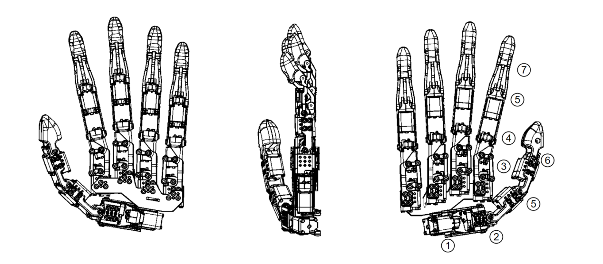
图中 1~6 分别对应：
1、CMC1
2、CMC2
3、MCP1
4、MCP2
5、PIP
6、DIP1
7、DIP2
3.3. 各自由度运动方向及角度范围
食指 、中指、无名指、小指结构一致，单指全长约 150mm；拇指模块结构略有差异，单指全长约 140 mm。下图以拇指和小指为例，说明各自由度的运动方向及角度范围：
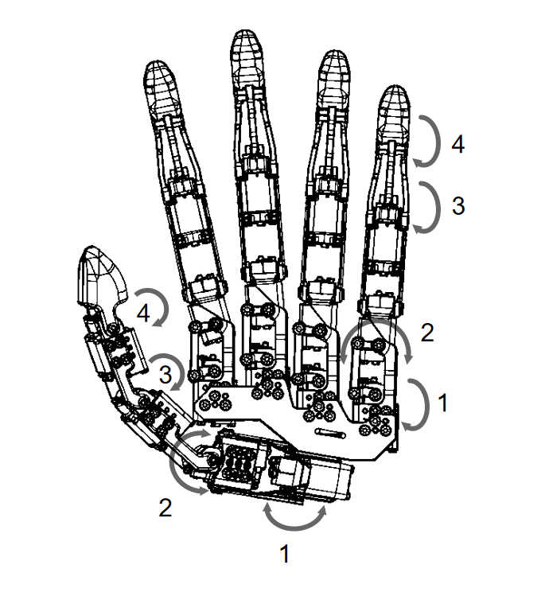
| 手指 | 自由度编号 | 运动方式 | 运动范围 |
| 拇指 | 1 | 掌根展收 | 100° |
| 2 | 掌根侧摆 | 80° | |
| 3 | 屈伸 | 140° | |
| 4 | 屈伸 | 140° | |
| 小指节 | 1 | 屈伸 | 130° |
| 2 | 侧摆 | 50° | |
| 3 | 屈伸 | 140° | |
| 4 | 屈伸 | 140° |
4. 特异化可拆卸手指
INV Hand 特异化版采用模块化快换设计，可更换特异化手指，将操作智能直接固化到手指的机械结构中，利用被动自适应结构在接触瞬间完成力与形状的匹配，不同功能的手指模块通过快换方式可实现多种复杂功能。手指具备3自由度主动驱动、力/触觉多模态感知和快速拆装接口，适用于非标准几何体自适应包络抓持、细径物体捏取、插孔装配等对指尖灵巧度和环境感知能力要求较高的场景。详见<u>特异化手指产品文档</u>。
5. 指示灯对照表
INV Hand 通过 USB-C 接口实现数据通信，同时支持外部电源供电。手背下方设有 RGB 多色状态指示灯，实时反馈供电和系统运行状态。指示灯对应系统状态如下表：
| 指示灯 | 状态符号 | 系统状态 | 说明 |
| 不亮 | 断电 | 未通电 | 未接入电源或电源模块故障 |
| 绿色闪烁 | 待机 | 已通电，等待连接 | 系统正常，尚未与上位机或SDK建立通信 |
| 绿色常亮 | 运行中 | 已连接上位机，正常工作 | 系统已启动，通信正常，可执行控制指令 |
| 黄色常亮 | 警告 | 存在非致命异常 | 检测到如温度偏高、电源波动等问题，建议暂停操作并排查 |
| 红色闪烁 | 预故障 | 即将触发故障 | 温度接近过温阈值等，需注意使用，建议尽快停止运行 |
| 红色常亮 | 严重故障 | 硬件或软件致命错误 | 主控MCU异常、通信失步等，应立即断能并检查日志排除故障或复位 |
| 蓝色常亮 | 引导模式 | 固件升级或引导状态 | 正在进行固件升级或引导程序，严禁断电或拔插线缆，以防系统损坏 |
6. 产品配件表
| 图示 | 名称 | 说明 |
|---|---|---|
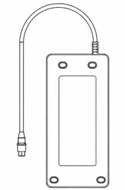  |
电源适配器及AC 线 | 供电 |
 |
抗冲击转接座 | 异常情况剧烈冲击时主动分离 |
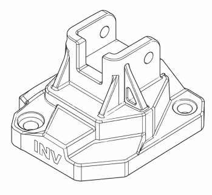 |
直连转接座 | 连接 INV Hand 与用户设备 |
 |
配件工具包 | 撬棒×1 六角扳手×5 内六角头M4螺钉×6 内六角头M5螺钉×5 内六角头M6螺钉×5 母头×4 |
 |
USB A to USB C 线 | 用于主机设备与 INV Hand 通信 |
7. 使用注意事项
7.1. 安装紧固要求
必须使用规定尺寸的紧固件，禁止采用不符合规格的螺钉。
建议按对角线顺序逐步拧紧，以保证安装面受力均匀。
在条件允许时，应使用匹配螺钉规格的扭矩工具，将锁紧力矩控制在标准范围内。
7.2. 日常检查与维护
每次完成安装或拆装操作后，应确认安全链、旋转锁扣等机构动作顺畅、无明显磨损，并检查挂点是否出现松动。
若设备在运行中因冲击触发了力释放保护，在重新安装前需检查安装螺钉是否仍保持紧固状态、旋转锁扣的锁定功能是否完好。
📜 授权协议
本仓库代码与文档采用 自定义商业禁止闭源协议 授权。
- ✅ 允许：个人学习、研究、非商业用途的引用与分发
- ❌ 禁止：商业闭源使用、未经授权的修改与再分发
详情见：LICENSE
深圳市英诺维信自动化设备有限公司
🏠 INVrobot 产品文档中心
特异型灵巧手产品文档
文档版本：V1.0 发布日期：2026.05.25 公司名称：英诺维信机器人 适用产品：特异型灵巧手系列产品（无动力夹取手指 / 有动力夹取手指 / 手指安装平台）
1. 项目总览
1.1 产品系列介绍
特异型灵巧手系列产品是英诺维信机器人面向柔性抓取、精密装配及人机协作场景推出的模块化机器人末端执行器解决方案。本系列包含三大核心模块：
| 产品名称 | 核心特征 | 驱动方式 | 自由度 | 典型场景 |
|---|---|---|---|---|
| 无动力夹取手指 | 纯机械被动自适应结构 | 无动力（被动） | 1 DOF | 纺织布料分拣、柔性物料搬运、低成本自动化改造 |
| 有动力夹取手指 | 模块化可拆卸、多模态感知 | 直流无刷伺服电机 + 谐波减速器 | 3 DOF | 精密装配、异形物体抓持、接触式感知、科研实验 |
| 手指安装平台 | 正五边形五指承载、360°独立旋转 | 5个旋转驱动电机 | 5 DOF | 五指灵巧手整机组装、多指协调控制、科研工业平台 |
三款产品采用统一的模块化设计理念，支持独立部署或组合集成，可根据应用场景灵活配置为单指模块、多指组合或完整五指灵巧手系统。
1.2 产品系列对比
| 对比维度 | 无动力夹取手指 | 有动力夹取手指 | 手指安装平台 |
|---|---|---|---|
| 驱动方式 | 纯机械被动驱动 | 电机+谐波减速器主动驱动 | 旋转驱动电机 |
| 控制需求 | 无需控制 | 位置/力/阻抗等多模式控制 | 位置/速度控制 |
| 感知能力 | 无 | 6轴力/力矩 + 16×16触觉阵列 | 无（取决于选用电机） |
| 重量 | 16 g（单指） | 185 g（单指） | 161.75 g（不含电机） |
| 成本 | 极低 | 中等 | 中等 |
| 维护难度 | 几乎免维护 | 定期维护 | 定期维护 |
| 断电安全性 | 机械自锁，不脱落 | 谐波减速器自锁保持 | 取决于电机 |
1.3 应用场景总览
本系列产品覆盖从低成本柔性搬运到高精度灵巧操作的全场景需求：
- 纺织自动化：无动力夹取手指专用于轻薄布料、面料裁片的无损伤抓取
- 精密装配：有动力夹取手指适用于电子元器件插拔、螺丝拧紧、细小零件定位
- 异形物体抓持：三指/五指组合实现食品分拣、不规则工业零件包络抓取
- 科研实验：多指协调控制、触觉感知算法验证、灵巧操作研究平台
- 人机协作：服务机器人开门、倒水、物品传递等日常辅助操作
- 柔性生产：适用于异形零件分拣、食品饮料搬运等柔性生产线
2. 无动力夹取手指
2.1 产品概述
本产品是一款面向纺织自动化、柔性物料搬运场景的无动力被动自适应布料夹爪，采用模块化可拆卸的纯机械欠驱动结构，可直接部署于协作机械臂末端或集成于布料分拣设备中。该夹爪依靠接触反力触发被动夹紧，通过内部斜楔-连杆机构实现自适应包络抓取，无需额外气/电动力源，依靠机械咬合与摩擦力实现轻薄、易变形布料的稳定抓取。相比传统有源夹爪，更适合纺织行业低成本、无气源/电源条件下的柔性物料自动化改造场景。
| 应用场景 | 描述 |
|---|---|
| 纺织产线布料分拣 | 轻薄布料、面料裁片的自动取放，依靠机械咬合实现无损伤抓取 |
| 服装自动化缝制线 | 衣片、面料半成品的上料/转运，无动力结构避免管线干扰缝纫工序 |
| 柔性物料分类搬运 | 无纺布、薄皮革等易变形柔性物料的无标记自适应抓取 |
| 低成本纺织自动化改造 | 旧产线无气源/电源条件下的自动化升级，大幅降低设备投入与维护成本 |
| 柔性抓取科研验证 | 欠驱动机械结构在柔性布料抓取中的力学特性与适应性研究平台 |
2.2 手指主体图
2.2.1 3D渲染图


2.2.2 部件清单

| 编号 | 部件名称 | 功能说明 | 材质/备注 |
|---|---|---|---|
| 1 | 壳体3.1 | 集成滚柱的运动路径，起固定整体结构的作用 | 7075铝合金，阳极氧化 |
| 2 | 壳体3.2 | 集成滚柱的运动路径，起固定整体结构的作用 | 7075铝合金，阳极氧化 |
| 3 | 手指3.1 | 夹取布料 | 7075铝合金，阳极氧化/表面硅胶覆盖 |
| 4 | 导轨3.1 | 给弹簧和横向导槽提供约束路径 | 7075铝合金，阳极氧化 |
| 5 | 横向导槽3.1 | 核心部件，夹爪的夹取靠它实现 | 7075铝合金，阳极氧化 |
| 6 | 滚珠3.1 | 实现夹爪开合的重要部件，通过特定路径让横向导槽固定在两种不同位置，使夹爪有开和合两种状态 | 7075铝合金，阳极氧化 |
2.3 平面设计图
2.3.1 俯视图

2.3.2 侧视图


2.3.3 关键尺寸参数
| 尺寸项 | 数值 | 公差 | 单位 |
|---|---|---|---|
| 夹爪总长度（伸展状态） | 62.02 | ±0.5 | mm |
| 夹爪总长度（闭合状态） | 48.63 | ±0.5 | mm |
| 手指长度 | 21.37 | ±0.5 | mm |
| 手指宽度 | 9.62 | ±0.5 | mm |
| 壳体厚度 | 20 | ±0.5 | mm |
| 壳体高度 | 37.5 | ±0.5 | mm |
| 横向导槽宽度 | 20 | ±0.5 | mm |
| 横向导槽高度 | 38.54 | ±0.5 | mm |
| 横向导槽厚度 | 9 | ±0.5 | mm |
| 导轨长度 | 29 | ±0.5 | mm |
| 导轨直径 | 1.9 | ±0.5 | mm |
| 滚柱直径 | 2.9 | --- | mm |
| 滚柱长度 | 7 | --- | mm |
2.4 产品参数
| 参数分类 | 参数项 | 典型数值或描述 |
|---|---|---|
| 结构与自由度 | 主动自由度 | 1 DOF |
| 关节数量 | 2个旋转关节（手指关节） | |
| 手指构型 | 类人单关节，可实行夹取动作 | |
| 工作空间 | 指尖可达空间 ≥ 62 mm（深度）× 60 mm（宽度） | |
| 尺寸与重量 | 单指自重（不含弹力零件） | 16 g |
| 外形尺寸（伸展） | 62 mm × 9 mm × 9 mm | |
| 驱动方式 | 驱动方式 | 无动力 |
| 负载性能 | 指尖最大法向力 | 50 N |
2.5 产品结构特征
2.5.1 结构示意图

2.5.2 自由度配置
| 自由度编号 | 关节名称 | 位置 | 驱动方式 | 关节类型 | 传动形式 |
|---|---|---|---|---|---|
| DOF-1 | 手指关节 | 手指根部 | 无动力 | 旋转关节 | 手掌直连 |
2.5.3 各自由度运动方向及角度范围
| 关节 | 运动描述 | 运动方向 | 角度范围 | 最大角速度 |
|---|---|---|---|---|
| 手指 | 根部旋转 | 绕点旋转 | 0° ~ +12° | 无 |

2.6 特异化设计要点
2.6.1 设计特征表
| 设计特征 | 技术说明 | 设计意图 | 实现方式 |
|---|---|---|---|
| 无动力被动自适应 | 纯机械结构，依靠外力驱动实现自适应夹紧 | 无需电机驱动，降低成本与控制复杂度，适配微小零件抓取 | 连杆机构 + 弹性复位件 |
| 高刚度滚柱销轴 | 关键受力销轴采用 Φ1 mm 440C 不锈钢材料 | 承受最大 50 N 载荷时不发生塑性变形或断裂 | 走心机精密车削 + 淬火强化处理 |
| 模块化装配结构 | 夹爪主体采用分体式设计，销轴与手指可快速拆装 | 便于加工、装配与维护，降低单件报废成本 | 阻挡式定位 + 标准销轴配合 |
| 防应力集中设计 | 销轴根部设置 R0.2 过渡圆角 | 避免交变载荷下的应力集中，提升零件疲劳寿命 | 车削加工时预留圆角，去毛刺处理 |
2.6.2 与通用夹爪对比
| 对比维度 | 平行夹爪（电爪） | 自适应三指夹爪 | 无动力夹爪 |
|---|---|---|---|
| 驱动方式 | 电机驱动，需控制 | 电机驱动，需控制 | 纯机械被动驱动，无控制 |
| 结构复杂度 | 中（含电机、丝杆） | 高（含多电机、连杆） | 低（仅连杆 + 销轴） |
| 成本与维护 | 较高，需定期维护 | 高，维护复杂 | 极低，几乎免维护 |
| 断电安全性 | 需自锁机构，否则易脱落 | 需自锁机构，否则易脱落 | 机械自锁，断电不脱落 |
2.7 工作方式
2.7.1 标准工作流程
步骤1：初始状态复位
时间：~300 ms
操作：夹爪在弹性复位件作用下，张开至最大开度的初始位置
判定：连杆机构到达机械限位，无卡顿、无卡滞
步骤2：物体预定位
时间：取决于机械臂运动
操作：上位机控制机械臂，将夹爪移动到目标工件上方的抓取预位姿
判定：无
步骤3：被动自适应抓取
时间：~150 ms
操作：机械臂带动夹爪下压接触工件，工件反作用力驱动夹爪被动闭合，连杆机构自适应贴合工件轮廓
判定：夹爪与工件完全贴合，机械结构自锁，无打滑趋势
步骤4：工件搬运与保持
时间：取决于任务周期
操作：机械臂带动夹爪与工件运动至目标位置
判定：无额外外力干扰时，夹爪保持闭合状态，工件无脱落风险
步骤5：工件释放
时间：~100 ms
操作：机械臂带动夹爪移动至放置位置，缓慢抬起，工件反作用力消失，夹爪在复位件作用下张开
判定：工件脱离夹爪接触面，完全释放；夹爪回到初始张开状态
2.8 优势特点
2.8.1 优势总结
| 序号 | 优势 | 技术支撑 |
|---|---|---|
| 1 | 高刚度受力结构 | Φ1 mm 关键销轴采用 440C 不锈钢淬火处理，可承受 50 N 载荷不发生塑性变形，安全系数＞3 |
| 2 | 被动自适应抓取 | 多段连杆机构实现无动力自适应包络，可适配不同尺寸、外形的微小零件，无需复杂控制算法 |
| 3 | 机械自锁防脱落 | 连杆机构死点自锁设计，断电或外力波动时仍可保持夹持状态，工件无脱落风险 |
| 4 | 轻量化与高集成度 | 主体采用 6061-T6 铝合金结构，单指重量仅 16 g，兼顾强度与轻量化需求 |
| 5 | 极低成本与免维护 | 纯机械结构设计，无电机、传感器等易损部件，成本仅为电爪的 1/10，几乎免维护 |
| 6 | 模块化快拆设计 | 销轴与连杆采用标准件配合，5 秒内即可完成拆装，便于更换不同适配手指 |
2.9 使用注意事项
2.9.1 安装紧固要求
2.9.2 日常检查与维护
| 维护项目 | 检查内容 | 建议周期 | 处理方法 |
|---|---|---|---|
| 外观检查 | 指尖硅胶端是否磨损、破裂；铝合金外壳有无磕碰变形；销轴表面有无锈蚀 | 每月 | 硅胶磨损及时更换；轻度磕碰不影响功能可继续使用；锈蚀销轴进行抛光或更换 |
| 关节活动检查 | 单关节旋转是否顺畅，有无异响或卡顿 | 每日 | 异响需拆开检查内部是否有异物或销轴卡滞；卡顿部位添加少量干性润滑脂 |
| 紧固件检查 | 安装螺钉和锁定卡扣是否松动 | 每周 | 松动螺钉按标准力矩重新拧紧；间隙过大的销轴进行更换 |
| 自锁机构检查 | 夹爪闭合后机械自锁是否可靠，有无晃动现象 | 每月 | 自锁失效时，检查横向导槽磨损情况及时更换 |
| 弹性复位件检查 | 复位弹簧弹性是否正常，张开/闭合动作是否到位 | 每月 | 弹性衰减时，更换同规格复位弹簧 |
2.9.3 安全警告
- 安装与固定安全：夹爪安装时，必须确保连接法兰与执行机构（机械臂/末端）刚性固定到位，螺栓按规定扭矩锁紧，防止运行过程中夹爪松脱、坠落。严禁使用变形、滑牙或规格不符的紧固件。
- 负载限制：夹爪能承受的最大压力为 50 N，不能超过此力，否则滚柱会断裂。
- 碰撞与防夹安全：夹爪运行路径内严禁放置人体部位、线缆或异物，防止夹伤或卡滞。发生碰撞卡滞后，应立即停止设备运行，在断电/停机状态下排查并排除故障，严禁在带电状态下强行拉扯或撬动夹爪。
- 维护与检查：定期检查夹爪关键受力件（钳口、连杆、弹簧、销轴等）是否有磨损、变形或裂纹，发现异常必须立即停用并更换零件。维护保养必须在设备完全停机、断电状态下进行。
3. 有动力夹取手指及快插拔模块
3.1 产品概述
本产品是一款面向精密装配、异形物体抓取与接触式感知任务的特异化灵巧手指模块，采用模块化可拆卸设计，可独立部署于协作机械臂末端或集成于多指灵巧手系统中。该手指具备 3 自由度主动驱动、力/触觉多模态感知和快速拆装接口，适用于非标准几何体自适应包络抓持、细径物体捏取、插孔装配等对指尖灵巧度和环境感知能力要求较高的场景。
| 应用场景 | 描述 |
|---|---|
| 精密装配 | 电子元器件插拔、螺丝拧紧、细小零件定位放置 |
| 异形物体抓持 | 食品分拣、不规则工业零件包络抓取 |
| 接触式感知作业 | 表面粗糙度检测、按压力控操作 |
| 医疗辅助 | 药瓶取放、柔性组织接触操作 |
| 科研实验 | 触觉算法验证、灵巧操作研究平台 |
3.2 手指主体图
3.2.1 3D渲染图

3.2.2 部件清单

| 编号 | 部件名称 | 功能说明 | 材质/备注 |
|---|---|---|---|
| 1 | 支撑杆件 | 对固定机夹起支撑作用 | 6061铝合金，表面处理为阳极氧化 |
| 2 | 固定机夹 | 对手指部分抓取脱落并有存放作用 | 6061铝合金，表面处理为阳极氧化 |
| 3 | 异形手指本体 | 通过电机转动带动手指在微型滑轨上进行开合和关闭（包含电机动力源） | 6061铝合金，表面处理为阳极氧化 |
| 4 | 外壳 | 对手指起包覆作用 | 6061铝合金，表面处理为阳极氧化 |
| 5 | 拆扣机构 | 实现多模块手指快拆更换自定义（包含磁吸装置提高稳定性和紧固性） | 6061铝合金，表面处理为阳极氧化 |
| 6 | 掌骨自由度 | 灵活弯曲（包含电机动力源） | 6061铝合金，表面处理为阳极氧化 |
3.3 平面设计图
3.3.1 俯视图

3.3.2 侧视图


3.3.3 关键尺寸参数


| 尺寸项 | 数值 | 公差 |
|---|---|---|
| 长度 | 56.65 mm | ±1 mm |
| 长度 | 65 mm | ±1 mm |


| 尺寸项 | 数值 | 公差 |
|---|---|---|
| 直径 | 24 mm | ±1 mm |
| 尺寸 | 27 mm | ±1 mm |
| 尺寸 | 25 mm | ±1 mm |


| 尺寸项 | 数值 | 公差 |
|---|---|---|
| 尺寸 | 15.6 mm | ±1 mm |
3.4 产品参数
| 参数分类 | 参数项 | 典型数值或描述 |
|---|---|---|
| 结构与自由度 | 主动自由度 | 2 DOF |
| 关节数量 | 2个旋转关节 | |
| 运动学构型 | 三段旋转关节串联，tendon-driven 与直驱混合 | |
| 手指构型 | 类人三关节屈伸，支持包络/捏取双模式 | |
| 总传动比 | 近关节 100:1 / 中关节 80:1 / 远关节 60:1 | |
| 工作空间 | 指尖可达空间 ≥ 120 mm（深度）× 60 mm（宽度） | |
| 尺寸与重量 | 单指自重（不含线缆） | 185 ± 5 g |
| 外形尺寸（伸展） | 155 mm × 35 mm × 30 mm | |
| 驱动模组直径 | 28 mm | |
| 驱动模组长度 | 42 mm | |
| 驱动方式 | 驱动方式 | 直流无刷伺服电机 + 微型谐波减速器 |
| 电机额定功率 | 3.5 W（单关节） | |
| 电机峰值扭矩 | 0.12 N·m（单关节） | |
| 关节最大输出力矩 | 近关节 5 N·m / 中关节 3 N·m / 远关节 1.5 N·m | |
| 控制与通信 | 控制频率 | 2000 Hz（单关节） |
| 内置控制器 | ARM Cortex-M7，主频 480 MHz | |
| 控制模式 | 位置控制 / 速度控制 / 力矩控制 / 力位混合控制 / 阻抗控制 | |
| 通信接口 | CAN 2.0B / CAN FD / RS-485 / UART（可配置） | |
| 通信协议 | 自定义CAN协议（兼容CANopen PDO/SDO映射） | |
| 通信速率 | CAN：1 Mbps / CAN FD：8 Mbps / RS-485：3 Mbps | |
| 总线终端电阻 | 120 Ω（板载，可通过跳线启用/禁用） | |
| 感知能力 | 指尖力/力矩传感器 | 6轴，量程 ±10 N（Fx/Fy/Fz），分辨率 0.01 N |
| 指尖触觉阵列 | 16 × 16 点阵，覆盖面积 12 mm × 12 mm | |
| 关节编码器 | 19位磁编码器（单圈绝对值） | |
| 电流传感器 | 12位ADC，每关节独立采样 | |
| 温度传感器 | NTC热敏电阻，监控驱动模组温度 | |
| 负载性能 | 指尖最大法向力 | 12 N |
| 指尖最大切向力 | 8 N | |
| 指尖捏取载荷 | 0.8 kg（标准测试棒 φ6 mm） | |
| 包络抓握载荷 | 2 kg（异形物体，摩擦系数 ≥ 0.4） | |
| 静态保持力矩 | ≥ 4 N·m（近关节，24V供电） | |
| 动态性能 | 全行程开合时间 | 0.25 s（空载，位置控制模式） |
| 关节最大转速 | 300 °/s（中关节，空载） | |
| 关节最大加速度 | 5000 °/s² | |
| 指尖最大线速度 | 1.2 m/s | |
| 精度与寿命 | 重复定位精度 | ± 0.05 mm（指尖，全行程） |
| 绝对定位精度 | ± 0.15 mm（经DH参数标定后） | |
| 力控分辨率 | 0.05 N（指尖法向） | |
| 空载抓握寿命 | ≥ 500,000 次 | |
| MTBF（平均无故障时间） | ≥ 20,000 小时 | |
| 电气性能 | 额定工作电压 | 24 V DC（范围 20 V ~ 30 V） |
| 静态功耗 | 2.5 W（待机，关节保持位置） | |
| 动态功耗 | 8 W（典型抓握运动） | |
| 峰值功耗 | 25 W（三关节同时以最大加速度运动） | |
| 工作电流（额定） | 0.35 A @ 24V | |
| 峰值电流 | 1.2 A @ 24V | |
| 电气接口 | JST SM08B-SRSS-TB（8pin，信号+电源） | |
| 绝缘等级 | Class F（155 °C） | |
| 材料与防护 | 外壳/结构件材质 | 7075-T6 铝合金 |
| 指尖接触材质 | 食品级硅胶（邵氏A 40度），可更换 | |
| 密封等级 | IP54（防粉尘/防溅水） | |
| 工作温度范围 | 0 °C ~ +50 °C | |
| 存储温度范围 | -20 °C ~ +60 °C | |
| 相对湿度 | ≤ 85% RH（无凝露） |
3.5 产品结构特征
3.5.1 结构示意图


3.5.2 自由度配置
| 自由度编号 | 关节名称 | 位置 | 驱动方式 | 关节类型 | 传动形式 |
|---|---|---|---|---|---|
| DOF-1 | MCP（掌指关节） | 手指根部 | 电机+谐波减速器直驱 | 旋转关节 | 谐波减速器输出直连 |
| DOF-2 | PIP（近端指间关节） | 中节与近节之间 | 电机+谐波减速器，差动连杆 | 旋转关节 | 连杆传动，与中关节耦合 |
| DOF-3 | DIP（远端指间关节） | 远节与中节之间 | 腱绳传动，耦合驱动 | 旋转关节 | 腱绳-滑轮耦合（与PIP保持固定比例） |
耦合传动关系：DIP 与 PIP 之间存在固定传动比，通常设置为 1:1.2 ~ 1:1.5，实现类人手指的自然弯曲形态。用户可根据应用需求在固件中调整耦合比。
3.5.3 各自由度运动方向及角度范围
| 关节 | 运动描述 | 运动方向 | 角度范围 | 最大角速度 |
|---|---|---|---|---|
| MCP | 根部屈伸 | 伸展→弯曲 | 0° ~ +100° | 200 °/s |
| PIP | 中段屈伸 | 伸展→弯曲 | 0° ~ +110° | 250 °/s |
| DIP | 末端屈伸 | 伸展→弯曲 | 0° ~ +80° | 300 °/s |
| DIP:PIP耦合 | 联动比例 | --- | DIP = 0.8 × PIP（出厂默认值） | --- |
3.6 手指功能介绍
3.6.1 功能列表
| 功能类别 | 功能名称 | 说明 | 适用场景 |
|---|---|---|---|
| 基础运动 | 位置控制 | 指定目标关节角度，手指运动到目标位置 | 精确重复性抓持 |
| 速度控制 | 指定关节运动速度，连续运动 | 扫描式搜索、轨迹跟踪 | |
| 力矩控制 | 指定输出力矩，用于与环境接触的操作 | 按压力控制、柔顺接触 | |
| 力位混合控制 | 正常运动时位置控制，接触后切换力控制 | 大多数抓持场景 | |
| 阻抗控制 | 设定目标阻抗（刚度+阻尼），实现柔顺交互 | 人机协作、易碎物体操作 | |
| 自适应包络抓握 | 根据物体形状自动调整关节角度，实现多接触面包络 | 异形/不规则物体抓持 | |
| 捏取模式 | 指尖对捏，利用DIP-PIP协调运动实现精确捏取 | 细小零件、薄片物体 | |
| 感知功能 | 指尖力/力矩感知 | 6轴力/力矩实时反馈 | 接触力监测、滑移检测 |
| 触觉阵列成像 | 16×16点阵压力分布实时输出 | 抓取稳定性评估、物体纹理识别 | |
| 关节状态反馈 | 位置/速度/力矩/电流/温度实时反馈 | 健康监测、故障预测 | |
| 碰撞检测 | 基于电流突变的快速碰撞检测（响应 < 1 ms） | 安全防护 | |
| 滑移检测 | 基于触觉阵列时序变化的指尖滑移判断 | 抓握力自适应调整 | |
| 高级功能 | 自主学习抓握 | 通过多次尝试记录最优抓握参数 | 未知物体自适应 |
| 固件在线升级 | 通过CAN总线更新固件 | 远程维护 | |
| 参数自标定 | 自动标定DH参数和传感器零偏 | 安装后快速校准 | |
| 多指协同（选配） | 通过主控制器协调多根手指运动 | 整手灵巧操作 |
3.6.2 操作原语表
| 原语名称 | 参数 | 描述 | 典型执行时间 | 返回状态 |
|---|---|---|---|---|
HOME |
无 | 手指回到初始位置（全伸展） | 300 ms | 完成/超时 |
FLEX |
angle [°], speed [%] |
指定关节按比例同时弯曲 | 可变 | 完成/受阻 |
EXTEND |
angle [°], speed [%] |
从当前位置伸展 | 可变 | 完成/超时 |
GRASP_ENVELOPE |
force [N], max_angle [°] |
包络抓握：弯曲直到力反馈达到阈值或角度达到上限 | 200-500 ms | 抓握成功/空抓/超时 |
PINCH |
force [N] |
指尖捏取模式：DIP+PIP协调运动至指尖接触 | 150-300 ms | 接触成功/空捏 |
RELEASE |
speed [%] |
释放物体，缓慢伸展至HOME位置 | 200-400 ms | 完成 |
HOLD |
force [N], duration [ms] |
以指定力保持当前抓握状态 | 持续 | 保持中/滑移/超时 |
SLIDE_DETECT |
threshold [N] |
启用滑移检测，当检测到位移时触发事件 | 持续 | 滑移事件/正常 |
IMPEDANCE_SET |
stiffness [N/m], damping [N·s/m] |
设置阻抗控制参数 | 即时 | 设置成功/参数越界 |
TOUCH_SEARCH |
direction, max_force [N] |
沿指定方向运动直到接触物体 | 可变 | 接触/超时 |
3.7 特异化设计要点
3.7.1 设计特征表
| 设计特征 | 技术说明 | 设计意图 | 实现方式 |
|---|---|---|---|
| 模块化快拆接口 | 机械+电气一体化快拆，无需工具可在5秒内完成拆装 | 支持现场快速更换不同功能的手指，提升系统灵活性 | 卡扣式锁定机构 + 8pin弹簧探针触点 |
| 异构驱动架构 | MCP直驱，PIP连杆传动，DIP腱绳耦合传动 | 根部高刚度输出，末端轻量化，整体功率密度最大化 | 谐波减速器+差动连杆+钢丝腱绳混合 |
| 集成式多模态感知 | 单指集成6轴力/力矩+16×16触觉阵列+关节状态感知 | 在紧凑空间内实现力/触觉/本体感觉三重感知 | MEMS力传感器+电容式触觉传感+磁编码器 |
| 指尖可更换端盖 | 硅胶端盖为标准件，提供多种硬度/纹理规格可选 | 适应不同摩擦系数和硬度要求的抓持对象 | 螺纹锁紧，3种硬度（邵氏A 20/40/60） |
| 中空走线设计 | 所有电气线缆从手指内部中心通道穿过 | 避免外部线缆在运动中磨损和缠绕 | 铝合金结构件中心钻孔，线缆全内置 |
| 自锁保持功能 | 断电时关节可通过减速器自锁保持位置 | 意外断电时抓持物体不脱落 | 谐波减速器反向间隙 < 3 arcmin |
3.7.2 与通用夹爪对比
| 对比维度 | 平行夹爪（电爪） | 自适应三指夹爪 | 本特异化灵巧手指 |
|---|---|---|---|
| 主动自由度 | 1（开合） | 3-4（协同抓取） | 3（独立可控） |
| 指尖运动空间 | 一维直线 | 有限锥形空间 | 完整三维工作空间 |
| 力/力矩感知 | 无或仅整体电流 | 整体力估计 | 6轴力/力矩（单指尖） |
| 触觉感知 | 无 | 无 | 16×16 触觉阵列 |
| 包络适应性 | 差（仅平面对夹） | 中（被动适应外形） | 优（主动调整多接触面） |
| 捏取精度 | 中 | 中 | 优（亚毫米级定位） |
| 重量 | 300-800 g | 500-1200 g | 185 g |
| 控制模式 | 位置控制 | 位置控制 | 位置/力/力位混合/阻抗 |
| 典型价格区间 | 0.5-2 万元 | 3-8 万元 | 【填写价格】万元 |
| 适用场景 | 标准件搬运 | 规则物体抓取 | 异形物体、精密装配、感知作业 |
3.8 工作方式
3.8.1 标准工作流程
步骤1：上电初始化
时间：~500 ms
操作：接入24V电源，手指执行自检程序
判定：状态灯由熄灭→绿色闪烁，自检完成→绿色常亮
步骤2：总线连接
时间：~100 ms
操作：主机通过CAN/CAN FD建立通信连接
判定：收到心跳帧，状态灯绿色常亮
步骤3：参数配置（如需）
时间：~50 ms
操作：设置控制模式（力位混合/阻抗等）、目标力阈值、耦合比
判定：配置确认应答
步骤4：执行HOME原语
时间：~300 ms
操作：手指回到全伸展初始位置
判定：三个关节到达0°位置，编码器读数稳定
步骤5：物体接近
时间：取决于机械臂运动
操作：上位机控制机械臂将手指移动到抓握预位姿
判定：视觉/激光定位完成
步骤6：执行抓握原语（GRASP_ENVELOPE 或 PINCH）
时间：150-500 ms
操作：手指按指定模式运动，直到力反馈达到阈值
判定：力传感器读数 ≥ 目标力，或达到最大允许角度
步骤7：保持抓握（HOLD）
时间：取决于任务
操作：以设定力维持抓握，实时监测滑移
判定：无滑移报警，物体稳定
步骤8：运输/操作
时间：取决于任务
操作：机械臂携带物体移动到目标位置
判定：加速度/振动在允许范围内
步骤9：释放（RELEASE）
时间：200-400 ms
操作：手指缓慢伸展，释放物体
判定：指尖力归零，关节回到伸展位
步骤10：返回步骤4或进入待机
操作：准备下一次抓握任务或断开连接待机
3.8.2 任务模式
| 模式名称 | 模式描述 | 关键参数 | 适用场景 |
|---|---|---|---|
| 精密捏取模式 | 指尖对捏，利用DIP-PIP协调实现精确夹持，力控精度最高 | 目标力：0.5-5 N，刚度：高（1000 N/m） | 电子元件、小螺丝、薄片 |
| 包络抓握模式 | 三段关节依次弯曲，实现多接触面包络，适应异形物体 | 目标力：2-10 N，刚度：中（500 N/m） | 不规则零件、瓶子、水果 |
| 力控接触模式 | 阻抗控制模式，手指作为力控探针与物体交互 | 刚度：10-200 N/m（可调），阻尼：0.5-5 N·s/m | 按键按压、表面检测 |
| 柔顺交互模式 | 低刚度阻抗控制，实现与人/环境的安全物理交互 | 刚度：低（50 N/m），阻尼：高（10 N·s/m） | 人机协作、易碎物体 |
| 快速抓取模式 | 位置控制为主，最大速度运行，牺牲部分柔顺性 | 速度：100%，力控阈值仅作超限保护 | 大批量分拣、高节拍场景 |
| 探索感知模式 | 触觉阵列全量输出，力传感器高频采样，用于数据采集 | 采样率：触觉100 Hz，力传感器1 kHz | 算法研究、数据集采集 |
3.9 优势特点
3.9.1 优势总结
| 序号 | 优势 | 技术支撑 |
|---|---|---|
| 1 | 超高功率密度 | 185 g整机重量实现3自由度主动驱动+5 N·m近关节输出，功率重量比达到行业领先水平 |
| 2 | 指尖多模态感知 | 单指集成6轴力/力矩传感器和256点触觉阵列，实现抓持力、接触分布、滑移三重感知 |
| 3 | 亚毫米级定位精度 | 19位磁编码器+低背隙谐波传动，指尖重复定位精度±0.05 mm |
| 4 | 5秒快拆互换 | 机械+电气一体化快拆接口，支持产线现场快速更换不同规格的手指模块 |
| 5 | 全内置中空走线 | 所有线缆从结构件中心通道穿过，IP54防护等级，无惧粉尘和水溅 |
| 6 | 多模式柔顺控制 | 支持位置/速度/力矩/力位混合/阻抗五种控制模式，覆盖从高速搬运到精细装配全场景 |
| 7 | 开放控制接口 | 提供C++/Python ROS2 SDK和CAN协议文档，支持用户自定义控制算法和二次开发 |
| 8 | 谐波自锁保持 | 断电时减速器自锁功能确保抓持物体不脱落，提升系统安全性 |
3.9.2 竞品对比
| 对比维度 | 本产品 | 竞品A（Shadow Dexterous Hand单指） | 竞品B（Robotiq 2-Finger单指模块） | 竞品C（国内灵巧手厂商单指） |
|---|---|---|---|---|
| 主动自由度 | 3 | 3 | 1（仅开合） | 2 |
| 指尖力/力矩传感 | 6轴 | 6轴 | 无 | 单轴力 |
| 触觉阵列 | 16×16 | 无（需外配） | 无 | 8×8 |
| 单指重量 | 185 g | ~200 g | ~350 g | ~220 g |
| 指尖最大力 | 12 N | 10 N | 20 N（整体） | 8 N |
| 重复定位精度 | ±0.05 mm | ±0.10 mm | ±0.5 mm | ±0.10 mm |
| 防护等级 | IP54 | IP30 | IP40 | IP40 |
| 控制模式 | 5种 | 3种 | 2种 | 3种 |
| 通信接口 | CAN/CAN FD/RS-485 | CAN/Ethernet | Modbus RTU/TCP | CAN/UART |
| 参考价格 | 【填写】万元 | ~15 万元 | ~3 万元 | ~5 万元 |
3.10 通信方式
3.10.1 协议支持
| 协议 | 物理层 | 数据速率 | 适用场景 | 备注 |
|---|---|---|---|---|
| 自定义CAN协议 | CAN 2.0B / CAN FD | 1 Mbps / 8 Mbps | 实时控制，推荐首选 | 帧格式定义见《通信协议手册》 |
| CANopen（CiA 301） | CAN 2.0B | 1 Mbps | 兼容CANopen主站 | 支持PDO/SDO，节点ID可配置 |
| 串口协议 | RS-485 / UART | 3 Mbps / 921600 bps | 调试、简单集成 | Modbus RTU帧格式兼容 |
3.10.2 接口定义
8pin连接器引脚定义（从手指向外看视角）
| 引脚 | 信号名称 | 类型 | 说明 | 电气规格 |
|---|---|---|---|---|
| 1 | VCC | 电源输入 | 24V直流供电 | 20-30V DC，最大2A |
| 2 | GND | 电源地 | 供电回路地 | --- |
| 3 | CAN_H | 信号 | CAN总线高 | 符合ISO 11898-2 |
| 4 | CAN_L | 信号 | CAN总线低 | 符合ISO 11898-2 |
| 5 | RS485_A | 信号 | RS-485差分正 | 半双工 |
| 6 | RS485_B | 信号 | RS-485差分负 | 半双工 |
| 7 | UART_TX | 信号 | 串口发送（手指→主机） | 3.3V TTL电平 |
| 8 | UART_RX | 信号 | 串口接收（主机→手指） | 3.3V TTL电平 |
注意：RS-485与CAN共用差分线对时需要通过跳线选择，不可同时使用。UART为调试接口，正常工作推荐优先使用CAN/CAN FD。
3.10.3 通信拓扑图
单指直连模式
┌─────────────┐ USB-CAN ┌──────────────┐
│ 上位机 │ ←——————————————→ │ 手指模块 │
│ (PC/工控机)│ 适配器(1 Mbps) │ (本节点ID) │
└─────────────┘ └──────────────┘
多指组网模式
┌─────────────┐
│ 上位机 │ ←—— CAN 总线主干（1 Mbps，双绞线，120Ω终端匹配）
│ (主控制器) │ ↓
└─────────────┘ ┌─────────┬─────────┬─────────┐
│ 手指-1 │ 手指-2 │ 手指-3 │ ←— 最多支持16个节点
│ ID=0x01 │ ID=0x02 │ ID=0x03 │
└─────────┴─────────┴─────────┘
CAN总线推荐采用菊花链拓扑，总线两端各接一个120Ω终端电阻。手指模块板载终端电阻可通过跳线启用，处于总线末端的节点应启用终端电阻。
3.10.4 通信帧格式（摘要）
| 帧类型 | COB-ID | 数据长度 | 数据字节定义 | 发送方向 |
|---|---|---|---|---|
| 心跳帧 | 0x700+NodeID | 1 | Byte0: 节点状态 | 手指→主机 |
| 关节状态帧 | 0x180+NodeID | 8 | Byte0-1:MCP角度, 2-3:PIP角度, 4-5:DIP角度, 6-7:力矩 | 手指→主机 |
| 力/触觉帧 | 0x280+NodeID | 8 | Byte0-1:Fx, 2-3:Fy, 4-5:Fz, 6-7:触觉中心压力 | 手指→主机 |
| 位置指令帧 | 0x300+NodeID | 6 | Byte0-1:MCP目标, 2-3:PIP目标, 4-5:DIP目标 | 主机→手指 |
| 模式配置帧 | 0x400+NodeID | 2 | Byte0:控制模式, Byte1:使能状态 | 主机→手指 |
3.11 控制方式
3.11.1 控制架构
┌─────────────────────────────────────────────┐
│ 应用层（上位机） │
│ 任务规划 / 视觉引导 / 力控算法 / 学习算法 │
└─────────────────┬───────────────────────────┘
│ ROS2 Topic / CAN Protocol
┌─────────────────▼───────────────────────────┐
│ 运动规划层（可选，PC端） │
│ 轨迹生成 / 逆运动学 / 碰撞检测 / 多指协调 │
└─────────────────┬───────────────────────────┘
│ CAN / CAN FD
┌─────────────────▼───────────────────────────┐
│ 关节控制层（手指内置MCU，480MHz） │
│ PID+前馈 / 力位混合 / 阻抗控制 / 安全监控 │
└─────────────────┬───────────────────────────┘
│ PWM + FOC
┌─────────────────▼───────────────────────────┐
│ 驱动层（手指内置驱动器） │
│ BLDC电机×3 / 谐波减速器 / 编码器 / 传感器 │
└─────────────────────────────────────────────┘
3.11.2 控制模式
| 控制模式 | 模式说明 | 关键参数 | 响应带宽 | 适用场景 |
|---|---|---|---|---|
| 位置控制（PID） | 各关节独立PID位置闭环，带速度和加速度前馈 | Kp, Ki, Kd, 前馈增益 | 500 Hz | 高速精确重复定位 |
| 速度控制 | 速度闭环，指定目标角速度 | 目标速度, 加速度限幅 | 500 Hz | 连续运动、扫描搜索 |
| 力矩控制 | 电流闭环→力矩输出，直接控制力矩 | 目标力矩, 力矩变化率限幅 | 2 kHz | 按压力控、与环境接触 |
| 力位混合控制 | 非接触时位置控制，接触后按力偏差切换力控制 | 切换力阈值, 力目标值, 位置环增益 | 1 kHz | 推荐默认模式，大多数抓取任务 |
| 阻抗控制 | 设定目标刚度-阻尼-质量参数，手指表现为虚拟弹簧-阻尼系统 | K（刚度）, D（阻尼）, M（等效质量） | 1 kHz | 柔顺交互、人机协作、易碎物体操作 |
力位混合控制模式详解
力位混合控制为本手指的推荐默认工作模式，其控制逻辑如下：
- 位置控制阶段：当指尖力传感器读数低于力切换阈值（默认 0.5 N）时，手指按位置控制模式运动，跟踪目标关节角度。
- 切换条件：当指尖力 ≥ 力切换阈值时，自动切换到力控制模式。
- 力控制阶段：在力控制模式下，手指根据目标力与当前力的偏差调整关节输出力矩，维持稳定的接触力。
- 切换回位置控制：当接触力降至阈值以下且持续 100 ms 时，自动回到位置控制。
可调参数：
force_threshold：力切换阈值，范围 0.1~10 N，默认值 0.5 Ntarget_force：目标保持力，范围 0~12 Nkp_position：位置环比例增益，范围 0~1000kp_force：力环比例增益，范围 0~100
3.11.3 SDK/API
ROS2支持
| 项目 | 说明 |
|---|---|
| 支持平台 | ROS2 Humble / Jazzy |
| 驱动包名称 | specialized_finger_ros2 |
| 主要功能 | 节点管理、话题发布/订阅、服务调用、参数配置 |
| 发布话题 | /finger/joint_states、/finger/force_torque、/finger/tactile_map、/finger/status |
| 订阅话题 | /finger/joint_cmd、/finger/mode_cmd |
| 提供服务 | ~/home、~/grasp、~/release、~/set_impedance |
Python API
# 示例：Python SDK快速上手代码
from specialized_finger import FingerController
# 初始化（通过CAN接口）
finger = FingerController(interface='can0', node_id=1)
finger.connect()
# 执行HOME
finger.home()
# 设置力位混合模式，执行包络抓握
finger.set_mode(FingerController.MODE_FORCE_POSITION)
finger.set_force_threshold(1.0) # 1N切换阈值
finger.set_target_force(3.0) # 3N保持力
result = finger.grasp_envelope(max_angle=90) # 最大弯曲90°
# 获取传感器数据
force = finger.get_force_torque() # [Fx, Fy, Fz, Mx, My, Mz]
tactile = finger.get_tactile() # 16×16 numpy数组
joints = finger.get_joint_states() # [MCP, PIP, DIP] 角度
# 释放
finger.release()
# 断开连接
finger.disconnect()
C++ API
| 类/接口 | 说明 |
|---|---|
class FingerDriver |
核心驱动类，管理CAN通信和状态机 |
bool connect(const string& iface, uint8_t node_id) |
连接指定CAN接口和节点ID |
bool setControlMode(ControlMode mode) |
设置控制模式 |
bool setJointPositions(const array<float,3>& angles) |
设置目标关节角度 [rad] |
bool setTargetForce(float force) |
设置目标力 [N] |
bool setImpedance(float K, float D, float M) |
设置阻抗参数 |
JointStates getJointStates() |
获取关节状态（位置/速度/力矩） |
ForceTorque getForceTorque() |
获取指尖力/力矩 |
TactileMap getTactileMap() |
获取触觉阵列数据 |
bool executePrimitive(PrimitiveType p, const PrimitiveParam& param) |
执行操作原语 |
完整API文档和示例代码见配套《SDK开发指南》。支持Ubuntu 22.04/24.04 LTS，提供CMake构建系统和Debian安装包。
3.12 指示灯对照表
| 指示灯状态 | 状态符号 | 系统状态 | 说明 |
|---|---|---|---|
| 不亮 | --- | 断电 | 未接入电源或电源模块故障 |
| 绿色闪烁（1 Hz） | 待机 | 已通电，等待连接 | 系统正常，尚未与主机建立通信 |
| 绿色常亮 | 运行中 | 已连接，正常工作 | 系统已启动，通信正常，可执行控制指令 |
| 黄色常亮 | 警告 | 存在非致命异常 | 温度偏高（>45°C）或电源波动，建议暂停操作排查 |
| 黄色闪烁（2 Hz） | 标定中 | 正在执行参数自标定 | 此时请勿施加外力或发送运动指令 |
| 红色闪烁（2 Hz） | 预故障 | 即将触发故障保护 | 温度接近过温阈值（>55°C），需尽快停止运行 |
| 红色常亮 | 严重故障 | 硬件或软件致命错误 | 主控异常、通信失步、编码器故障等，应立即断电检查 |
| 蓝色常亮 | 固件升级 | Bootloader模式 | 正在进行固件升级，严禁断电或拔插线缆 |
| 紫色常亮 | 力控饱和 | 力/力矩输出达到上限 | 当前负载超出设定输出能力，需降低负载或调整目标力 |
| 青色常亮 | 碰撞触发 | 碰撞检测已触发 | 检测到异常接触力，关节已进入保护状态，需复位后恢复 |
3.13 产品配件表
| 图示 | 名称 | 类型 | 说明 |
|---|---|---|---|
| 【图片：电源适配器外观图】 | 24V直流电源适配器 | 标配 | 额定输出：24V 3A，峰值功率72W，含AC输入线 |
| 【图片：CAN-USB适配器外观图】 | CAN-USB适配器 | 标配 | USB转CAN/CAN FD接口卡，用于PC与手指通信 |
| 【图片：连接线束图】 | 手指连接线缆 | 标配 | 8芯屏蔽线缆，长度0.5m，一端JST母头一端散线 |
| 【图片：指尖端盖套装图】 | 可更换指尖端盖套装 | 标配 | 3种硬度硅胶端盖（邵氏A 20°/40°/60°），各1件 |
| 【图片：机械安装法兰图】 | 机械安装法兰 | 标配 | 铝合金转接法兰，M6螺钉安装孔，用于固定手指基座 |
| 【图片：配件工具包图】 | 配件工具包 | 标配 | 六角扳手×3（1.5/2/2.5mm）、撬棒×1、M3螺钉×8、M4螺钉×8 |
| 【图片：防水线缆图】 | 防水延长线缆（2m） | 选配 | IP67防护等级延长线，用于潮湿环境部署 |
| 【图片：多指转接板图】 | 多指手掌转接板 | 选配 | 支持安装3/4/5根手指的铝合金手掌基座 |
| 【图片：标定夹具图】 | 指尖标定夹具 | 选配 | 用于精确标定力传感器零偏和触觉阵列增益 |
| 【图片：防护套图】 | 防尘防护套 | 选配 | 硅胶材质，覆盖手指运动部分，提升IP等级至IP65 |
3.14 使用注意事项
3.14.1 安装紧固要求
快拆基座安装：将手指快拆基座对准安装面的定位销，推入到位后顺时针旋转锁定卡扣至"咔嗒"声确认锁定。拆卸时按压卡扣按钮并逆时针旋转即可释放。
螺钉紧固：安装法兰与机械臂/手掌连接时，使用M6×16内六角圆柱头螺钉（强度等级8.8级以上），按对角线顺序分两步拧紧：
- 第一步：预拧紧，力矩 2 N·m
- 第二步：最终拧紧，力矩 6 N·m（使用校准过的扭矩扳手）
电气连接：连接8pin线缆时确认插头方向正确（防呆槽对齐），插接到位后听到锁定声。首次上电前用万用表确认VCC与GND之间无短路，供电电压在20V~30V范围内。
总线终端电阻：当手指作为CAN总线末端节点时，需将基座上的TERMINATION跳线帽置于ON位置以启用120Ω终端电阻。中间节点应置于OFF位置。
3.14.2 日常检查与维护
| 维护项目 | 检查内容 | 建议周期 | 处理方法 |
|---|---|---|---|
| 外观检查 | 指尖硅胶端盖是否磨损、破裂，铝合金外壳有无磕碰变形 | 每日 | 磨损端盖及时更换；轻度磕碰不影响功能可继续使用 |
| 关节活动检查 | 三关节屈伸是否顺畅，有无异响或卡顿 | 每日 | 异响需拆开检查内部是否有异物或腱绳松动 |
| 紧固件检查 | 安装螺钉和锁定卡扣是否松动 | 每周 | 松动螺钉按标准力矩重新拧紧 |
| 传感器零偏校准 | 无负载状态下力传感器读数是否接近零 | 每月 | 执行 CALIBRATE_FORCE原语进行零偏自标定 |
| 触觉阵列标定 | 均匀压力下触觉阵列读数是否均匀分布 | 每月 | 使用标定夹具执行阵列增益标定 |
| 线缆检查 | 连接线缆外皮有无破损，接头有无氧化 | 每月 | 破损线缆及时更换；氧化接头用无水酒精清洁 |
| 驱动模组散热 | 运行中驱动模组温度是否持续>50°C | 持续 | 温度偏高时降低运动Duty Cycle或增加外部散热 |
| 谐波减速器润滑 | 累计运行>5000小时后检查润滑状态 | 每5000小时 | 由厂商或授权服务商执行专业维护 |
3.14.3 安全警告
- 供电安全：手指模块采用24V直流供电，严禁接入交流电源或超过30V的直流电源，否则将导致永久性损坏。
- 过温保护：当驱动模组温度超过60°C时，系统将自动触发过温保护并切断电机输出。此时应停止使用，待自然冷却至40°C以下后再恢复运行。
- 碰撞处理：当碰撞检测触发后，手指将立即切断电机输出力矩。恢复操作步骤：排除碰撞原因 → 发送
HOME原语 → 确认状态灯恢复绿色常亮 → 继续任务。 - 固件升级：固件升级过程中严禁断电或拔插通信线缆，升级失败可能导致设备无法启动。建议仅在稳定的供电环境下执行升级操作。
- 负载限制：严禁超过额定负载（指尖力12N / 捏取载荷0.8kg / 包络载荷2kg）使用，超载运行将加速减速器磨损并可能触发安全保护。
4. 特异型灵巧手指安装平台
4.1 产品概述
本产品是一款面向协作机械臂末端与灵巧手系统的五指安装平台，采用正五边形模块化结构设计，可独立部署于协作机械臂末端法兰盘，实现五根灵巧手指的统一承载与独立旋转驱动。平台内置5个旋转驱动电机，每根手指可实现 0°~360° 连续旋转，适配符合 ISO 9409-1-31.5/40/50/63 标准的机械臂末端法兰盘。该平台可广泛应用于科研探索、工业生产及日常服务等多类场景，是构建完整灵巧手系统的核心中间层结构件。
| 应用场景 | 描述 |
|---|---|
| 科研实验平台 | 用于灵巧手抓取算法验证、多指协调控制研究、触觉感知数据采集等实验室场景 |
| 精密装配作业 | 配合灵巧手指完成电子元器件插拔、螺丝拧紧、精密零件定位放置等工业任务 |
| 柔性生产分拣 | 适用于异形零件包络抓取、食品饮料分拣、不规则工业部件搬运等柔性生产线 |
| 人机协作场景 | 通过旋转调整各手指朝向，使灵巧手快速适配不同形态物体，实现安全人机协作 |
| 日常辅助服务 | 可集成于服务机器人，完成开门、倒水、物品传递等日常生活辅助操作 |
4.2 产品主体图
4.2.1 3D渲染图


4.2.2 部件清单

| 编号 | 部件名称 | 功能说明 | 数量 | 材料/备注 |
|---|---|---|---|---|
| 1 | 旋转驱动电机（平台内部）+ 手指根部电机 | 驱动电机驱动手指绕旋转轴 0°~360° 连续旋转，实现手指朝向自由调整；手指根部电机安装于电机壳上，驱动灵巧手指第一关节（MCP关节），每根手指独立驱动 | 5+5 | 5个旋转驱动电机 + 5个手指根部电机，均为同一型号 |
| 2 | 手指安装平台底盒 | 平台主承载结构，与机械臂末端法兰盘连接，适配 ISO 9409-1-31.5/40/50/63 | 1 | 6061铝合金，本色阳极氧化 |
| 3 | 手指安装平台顶壳 | 封闭平台上方，固定5个旋转驱动电机，为手指根部提供安装基准面 | 1 | 6061铝合金，本色阳极氧化 |
| 4 | 推力球轴承 | 支撑电机壳旋转，承受手指及电机壳的轴向载荷，保证旋转精度 | 5 | 轴承钢，型号 6×12×4.5 mm |
| 5 | 电机壳 | 连接旋转驱动电机与手指根部电机，传递旋转运动，保护内部结构 | 5 | 6061铝合金，本色阳极氧化 |
| 6 | M2×3 平头内六角螺丝 | 固定手指根部电机至电机壳（每个电机8颗）；固定平台内部旋转电机至顶壳（每个电机3颗） | 55（40+15） | 304不锈钢，镀镍/镀黑锌 |
| 7 | M3×10 平头内六角螺丝 | 连接顶壳与底盒，锁紧平台整体结构 | 5 | 304不锈钢，镀镍/镀黑锌 |
4.3 平面设计图
4.3.1 俯视图

4.3.2 侧视图

4.3.3 关键尺寸参数
| 尺寸项 | 数值 | 公差 | 单位 |
|---|---|---|---|
| 五边形内切圆直径 | 80 | ±0.5 | mm |
| 顶点外圆角半径 | ≈28.28 | --- | mm |
| 顶点内圆角半径 | ≈26 | --- | mm |
| 外壳壁厚 | 2 | ±0.2 | mm |
| 盒底+盒盖高度（不含电机壳） | 24.5 | ±0.3 | mm |
| 底部至电机壳顶部总高度 | 49 | ±0.5 | mm |
| 电机壳伸出顶壳高度 | ≈24.5 | --- | mm |
| 手指安装位数量 | 5 | --- | --- |
| 手指安装位分布 | 均匀分布于五边形5个顶点方向，间隔72° | --- | --- |
| 推力球轴承规格 | 6×12×4.5 | --- | mm |
| 整机质量（不含电机） | 161.75 | ±3 | g |
| 法兰适配标准 | ISO 9409-1-31.5 / 40 / 50 / 63 | --- | --- |
4.4 产品参数
| 参数分类 | 参数项 | 典型数值或描述 |
|---|---|---|
| 结构与自由度 | 主动自由度 | 5 DOF（每根手指旋转轴各1个自由度） |
| 旋转轴数量 | 5个独立旋转轴，对应5个手指安装位 | |
| 手指安装位分布 | 正五边形顶点均匀分布，相邻夹角72° | |
| 法兰适配标准 | ISO 9409-1-31.5 / ISO 9409-1-40 / ISO 9409-1-50 / ISO 9409-1-63 | |
| 平台构型 | 正五边形封闭壳体，底部连接机械臂，顶部驱动5根手指旋转 | |
| 尺寸与重量 | 五边形内切圆直径 | 80 mm |
| 外形总高度（不含电机壳） | 24.5 mm | |
| 底部至电机壳顶部高度 | 49 mm | |
| 外壳壁厚 | 2 mm | |
| 整机质量（不含电机） | 161.75 ± 3 g | |
| 旋转自由度性能 | 旋转角度范围 | 0° ~ 360°（连续旋转） |
| 轴承类型 | 推力球轴承，规格 6×12×4.5 mm | |
| 旋转轴数量 | 5个独立旋转轴 | |
| 驱动 | 平台内部电机数量 | 5个（旋转驱动电机，驱动电机壳旋转） |
| 平台外部电机数量 | 5个（手指根部电机，安装在电机壳上，随电机壳旋转） | |
| 平台内部电机固定方式 | 每个电机3颗M2×3平头内六角螺丝固定于顶壳 | |
| 手指根部电机固定方式 | 每个电机8颗M2×3平头内六角螺丝固定于电机壳 | |
| 机械连接 | 平台顶壳与底盒连接 | 5颗M3×10平头内六角螺丝 |
| 与机械臂连接方式 | 底盒底部法兰安装面，适配 ISO 9409-1 系列标准法兰 | |
| 材料与工艺 | 底盒材质 | 6061铝合金，本色阳极氧化 |
| 顶壳材质 | 6061铝合金，本色阳极氧化 | |
| 电机壳材质 | 6061铝合金，本色阳极氧化 | |
| 轴承材质 | 轴承钢 | |
| 紧固件材质 | 304不锈钢，镀镍/镀黑锌 |
4.5 产品结构特征
4.5.1 结构示意图

4.5.2 自由度配置
手指安装平台共配置5个主动旋转自由度，每个自由度对应一个手指安装位。平台内置5个旋转驱动电机，每个电机通过推力球轴承驱动对应的电机壳绕竖直轴做 0°~360° 连续旋转，从而带动安装在电机壳上的手指根部电机和手指整体旋转，实现手指朝向的自由调整。

| 自由度编号 | 位置 | 驱动方式 | 关节类型 | 旋转范围 | 承载方式 |
|---|---|---|---|---|---|
| DOF-1 | 手指位1（0°方向） | 平台内部旋转电机驱动 | 旋转关节 | 0°~360°连续 | 推力球轴承 |
| DOF-2 | 手指位2（72°方向） | 平台内部旋转电机驱动 | 旋转关节 | 0°~360°连续 | 推力球轴承 |
| DOF-3 | 手指位3（144°方向） | 平台内部旋转电机驱动 | 旋转关节 | 0°~360°连续 | 推力球轴承 |
| DOF-4 | 手指位4（216°方向） | 平台内部旋转电机驱动 | 旋转关节 | 0°~360°连续 | 推力球轴承 |
| DOF-5 | 手指位5（288°方向） | 平台内部旋转电机驱动 | 旋转关节 | 0°~360°连续 | 推力球轴承 |
4.5.3 运动自由度说明
每个旋转自由度的运动轴线为竖直方向（与机械臂末端法兰轴线平行），旋转运动带动电机壳及其上方的手指根部电机整体旋转。通过独立控制5个旋转自由度，可实现以下典型构型：
| 构型名称 | 各手指旋转角度 | 适用场景 |
|---|---|---|
| 标准五指展开构型 | 所有手指朝向外侧均匀展开 | 包络抓握大型物体 |
| 集中夹持构型 | 5根手指均朝向中心内侧 | 抓取细长柱状物体 |
| 对侧捏取构型 | 相邻两指相向旋转，形成对捏姿态 | 精密捏取小型零件 |
| 扇形展开构型 | 手指角度渐进排列，形成扇面 | 抓取扁平不规则物体 |
| 自定义构型 | 每根手指独立设定任意角度 | 复杂操作任务自适应配置 |
4.6 平台功能介绍
4.6.1 功能列表
| 功能类别 | 功能名称 | 说明 | 适用场景 |
|---|---|---|---|
| 基础运动 | 手指旋转定位 | 控制5个旋转轴至指定角度，调整每根手指朝向 | 抓取前构型调整 |
| 连续旋转 | 支持 0°~360° 无限制连续旋转，无死区 | 旋拧式操作、动态朝向调整 | |
| 多指协同旋转 | 同步或异步控制多根手指旋转，快速切换抓取构型 | 复杂操作任务 | |
| 原位构型切换 | 在保持抓取状态时，重新分配未受力手指的朝向 | 在线任务重构 | |
| 结构功能 | 五指统一承载 | 为5根灵巧手指提供统一的机械连接基准和电气走线通道 | 整机集成 |
| 多规格法兰适配 | 底盒适配 ISO 9409-1 系列标准，兼容主流协作机械臂 | 多品牌机械臂集成 | |
| 模块化拆装 | 顶壳与底盒通过5颗螺丝连接，电机壳通过螺丝固定，维护便捷 | 现场维护与升级 | |
| 安全功能 | 轴向载荷承载 | 推力球轴承承受手指重力及操作载荷的轴向分量，保护旋转电机 | 高载荷抓取 |
| 结构紧凑防护 | 全封闭铝合金壳体，保护内部旋转电机免受粉尘、碰撞影响 | 工业环境使用 |
4.6.2 典型操作流程
以下为一次完整的"构型调整→抓取"操作流程示例：
| 步骤 | 操作内容 | 说明 |
|---|---|---|
| 步骤1 | 上位机发送旋转指令 | 根据目标物体形态，计算5根手指所需朝向角度，向平台旋转电机发送目标角度指令 |
| 步骤2 | 平台旋转电机动作 | 5个旋转驱动电机独立驱动对应电机壳旋转至目标角度，手指朝向随之调整 |
| 步骤3 | 确认构型就绪 | 上位机读取旋转轴编码器反馈，确认所有手指角度到位 |
| 步骤4 | 手指执行抓取 | 上位机驱动灵巧手手指执行抓握动作（GRASP_ENVELOPE / PINCH等原语） |
| 步骤5 | 完成操作 | 根据任务需要，可在保持抓取的同时旋转部分手指，进行二次构型调整 |
4.7 特异化设计要点
4.7.1 设计特征表
| 设计特征 | 技术说明 | 设计意图 | 实现方式 |
|---|---|---|---|
| 正五边形对称结构 | 平台轮廓为正五边形，5个手指安装位对称分布于顶点，间隔72° | 均衡分配各手指受力，避免抓取时整体力矩偏斜，贴近人手拓扑 | 铝合金整体铣削成型，顶点倒圆角处理 |
| 独立360°旋转驱动 | 每根手指配备独立旋转驱动电机，支持连续全角度旋转，无死区限制 | 使灵巧手可快速切换抓取构型，适应不同形态物体，提升系统灵活性 | 旋转电机+推力球轴承+电机壳传动链 |
| 推力球轴承轴向支撑 | 采用 6×12×4.5 mm 推力球轴承支撑旋转电机壳，承受手指及载荷的轴向力 | 保护旋转电机不受轴向冲击，延长使用寿命，保证旋转精度 | 每个手指位各配置1只推力球轴承 |
| 多规格法兰适配底盘 | 底盒底面设计适配 ISO 9409-1-31.5/40/50/63 标准安装孔位 | 兼容主流协作机械臂品牌（UR、KUKA、ABB等），降低系统集成难度 | 底盒法兰面多组安装孔预设，一盒适配多款机械臂 |
| 铝合金轻量化结构 | 底盒、顶壳、电机壳均采用6061铝合金加工，整机（不含电机）仅 161.75 g | 减少机械臂末端附加载荷，保留更多有效载荷余量供手指和抓取任务使用 | 6061铝合金数控铣削+本色阳极氧化表面处理 |
| 紧凑分层装配设计 | 底盒+顶壳总高仅 24.5 mm，含电机壳整机高度 49 mm，结构极为紧凑 | 降低末端整体高度，减小操作盲区，提升末端在狭窄空间内的可达性 | 顶壳与底盒通过5颗M3螺丝快速拆装，维护方便 |
4.7.2 与固定法兰盘安装方式对比
| 对比维度 | 传统固定安装法兰 | 可旋转三指手掌 | 本五指安装平台 |
|---|---|---|---|
| 手指朝向调整 | 不可调，固定朝向 | 有限调整（被动或1~2自由度） | 每指独立360°连续旋转，全自由 |
| 手指数量 | 通常1~3根 | 2~4根 | 5根 |
| 构型切换 | 不支持 | 有限构型（2~4种） | 任意构型（理论无限种） |
| 法兰兼容性 | 单一规格 | 部分兼容 | ISO 9409-1系列四规格全兼容 |
| 自重（不含手指） | 50~150 g | 200~400 g | 161.75 g（含电机壳，不含电机） |
| 适用手指数量 | 1~3根 | 2~4根 | 5根 |
| 维护便捷性 | 高（无运动部件） | 中 | 中（5颗螺丝拆装顶壳） |
| 典型应用 | 简单夹爪集成 | 三指抓取系统 | 五指灵巧手完整系统 |
4.8 工作方式
4.8.1 标准工作流程
以下为平台从上电到完成一次完整构型调整及抓取任务的标准工作流程：
| 步骤 | 时间 | 操作 | 判定条件 |
|---|---|---|---|
| 步骤1：上电初始化 | ~500 ms | 接入电源，平台旋转电机执行自检和零位标定 | 各旋转轴回到参考零位，状态灯绿色常亮 |
| 步骤2：通信建立 | ~100 ms | 上位机建立通信连接，读取各旋转轴当前角度 | 收到平台状态反馈，各轴角度读数正常 |
| 步骤3：构型规划 | 取决于算法 | 上位机根据目标物体形态，规划5根手指所需朝向角度 | 构型规划完成，目标角度已计算 |
| 步骤4：手指旋转定位 | 100~500 ms | 发送旋转指令，5个旋转电机独立或协同驱动手指至目标朝向 | 所有旋转轴到达目标角度，编码器反馈稳定 |
| 步骤5：接近目标物体 | 取决于机械臂 | 上位机控制机械臂将平台移动至抓取预位姿 | 视觉/激光定位完成，末端姿态确认 |
| 步骤6：执行抓取 | 150~500 ms | 驱动各手指执行抓握原语（包络/捏取等） | 力传感器反馈达到目标，抓握成功 |
| 步骤7：搬运与操作 | 取决于任务 | 机械臂携带物体移动至目标位置，可同步调整非受力手指朝向 | 无异常振动，物体稳定持握 |
| 步骤8：释放物体 | 200~400 ms | 各手指缓慢伸展，完成释放 | 手指力反馈归零，释放确认 |
| 步骤9：复位待机 | ~300 ms | 旋转轴回到默认构型（如展开构型），等待下次任务 | 各轴到达待机角度 |
4.8.2 典型构型模式
| 模式名称 | 各旋转轴角度 | 特点 | 适用场景 |
|---|---|---|---|
| 五指对称展开 | 每指朝向外侧，间隔72°均匀展开 | 最大包络范围，五指均衡受力 | 大型物体包络抓握 |
| 五指内聚模式 | 5根手指均旋转指向中心区域 | 强力夹持，适合柱状/球状物体 | 抓取球体、圆柱体 |
| 拇指对四指模式 | 1根手指朝向与其余4根相对 | 模拟人手拇指对立结构 | 精密捏取、工具使用 |
| 两侧夹持模式 | 相邻两根手指相向，另3根待机 | 高精度双指/四指对捏 | 细小零件夹持 |
| 扇形渐进模式 | 手指角度以固定步长递增排列 | 适应扁平、不规则几何体 | 板状工件、扁平物体 |
| 自定义模式 | 每根手指独立设定任意角度 | 最高灵活性，满足特殊操作需求 | 复杂操作任务 |
4.9 优势特点
4.9.1 优势总结
| 序号 | 优势 | 技术支撑 |
|---|---|---|
| 1 | 五指全向旋转 | 5个旋转自由度支持 0°~360° 连续旋转，任意构型切换，覆盖人手所有典型抓取姿态及更多扩展姿态 |
| 2 | 轻量化紧凑设计 | 整机（不含电机）仅 161.75 g，外形高度 49 mm，最大程度保留机械臂有效载荷，减小末端尺寸 |
| 3 | 多规格法兰兼容 | 一体支持 ISO 9409-1-31.5/40/50/63 四种标准，覆盖UR、ABB、KUKA、FANUC等主流协作机械臂 |
| 4 | 推力球轴承保护 | 每个旋转轴配置推力球轴承，有效承受手指及操作载荷的轴向力，保护旋转驱动电机，延长使用寿命 |
| 5 | 模块化快速维护 | 顶壳与底盒仅5颗M3螺丝连接，电机壳通过标准螺丝固定，可快速拆卸维修或更换手指模块 |
| 6 | 高品质铝合金结构 | 底盒、顶壳、电机壳全部采用6061铝合金数控铣削成型，本色阳极氧化处理，耐腐蚀、强度高 |
| 7 | 五指对称拓扑 | 正五边形布局，相邻手指72°均匀分布，力学分布对称，适合执行全向平衡抓取任务 |
| 8 | 科研工业双适用 | 结构参数与法兰接口满足工业现场标准，同时支持科研平台快速集成与二次开发 |
4.9.2 竞品对比
| 对比维度 | 传统固定法兰（单指/三指） | 通用三指手掌基座 | 本五指安装平台 |
|---|---|---|---|
| 手指安装数量 | 1~3根 | 3~4根 | 5根 |
| 旋转自由度 | 0（固定） | 0~1（部分可选） | 5个独立，每指360° |
| 构型种类 | 1种（固定） | 有限（2~4种预设） | 无限（连续可调） |
| 整机自重（不含手指） | 50~150 g | 200~500 g | 161.75 g |
| 法兰兼容规格数 | 通常1种 | 1~2种 | 4种（ISO 9409-1系列） |
| 整机高度 | 20~40 mm | 40~80 mm | 49 mm |
| 材质 | 铝合金/钢 | 铝合金 | 6061铝合金，阳极氧化 |
| 维护便捷性 | 高 | 中 | 中（5颗螺丝快拆） |
| 适用场景 | 简单夹持任务 | 三指通用抓取 | 五指灵巧操作/科研/工业 |
| 参考价格 | 0.2~1 万元 | 1~5 万元 | 待定 |
4.10 通信方式
说明：本平台自身不含独立控制器，通信接口由所选用旋转驱动电机决定。以下内容为推荐集成方案，具体参数以最终选用电机的规格为准。
4.10.1 推荐集成方案
| 通信方式 | 物理层 | 推荐场景 | 备注 |
|---|---|---|---|
| CAN / CAN FD | CAN 2.0B / CAN FD | 多轴实时协同控制，推荐首选 | 可将5个旋转轴作为5个CAN节点统一管理 |
| RS-485 | RS-485半双工 | 低成本集成、调试使用 | Modbus RTU帧格式，支持菊花链拓扑 |
| UART | 3.3V/5V TTL | 单轴调试、固件烧写 | 调试接口，不推荐正式部署使用 |
| 以太网/EtherCAT | 100BASE-TX | 高实时性工业应用 | 需旋转电机支持EtherCAT从站 |
4.10.2 典型通信拓扑
以CAN总线为例，5个旋转驱动电机作为5个独立CAN节点，上位机通过USB-CAN适配器统一管理：
多节点组网拓扑示意（文字版）：
┌──────────┐ USB-CAN ┌─────────────────────────────────────┐
│ 上位机 │────────→│ CAN总线（1 Mbps，120Ω终端匹配） │
└──────────┘ └──┬──────┬──────┬──────┬──────┬──────┘
旋转轴1 旋转轴2 旋转轴3 旋转轴4 旋转轴5
ID=0x01 ID=0x02 ID=0x03 ID=0x04 ID=0x05
说明：5个旋转轴节点可与灵巧手手指节点共享同一CAN总线，通过节点ID区分，最多支持16个节点共线运行。总线两端各接一个120Ω终端电阻。
4.11 控制方式
说明：本平台不含独立控制器，所有控制指令由上位机直接下发至各旋转驱动电机。以下内容为推荐控制架构，具体实现取决于所选用旋转电机的控制能力。
4.11.1 控制架构
本平台采用直通式控制架构，上位机直接通过总线控制5个旋转驱动电机，无中间控制器层：
┌─────────────────────────────────────────────┐
│ 应用层（上位机） │
│ 构型规划 / 视觉引导 / 手指协调控制算法 │
└─────────────────┬───────────────────────────┘
│ CAN / RS-485（直接控制）
┌─────────────────▼───────────────────────────┐
│ 旋转驱动电机层（5个电机，各自独立） │
│ 位置控制 / 速度控制 / 编码器反馈 │
└─────────────────┬───────────────────────────┘
│ 机械传动
┌─────────────────▼───────────────────────────┐
│ 执行层（电机壳+推力轴承+手指根部电机） │
│ 手指旋转定位 / 手指抓取动作 │
└─────────────────────────────────────────────┘
4.11.2 推荐控制模式
| 控制模式 | 说明 | 关键参数 | 适用场景 |
|---|---|---|---|
| 位置控制 | 指定目标旋转角度，电机运动至目标位置后保持 | 目标角度、运动速度、加速度 | 构型调整、固定朝向抓取 |
| 速度控制 | 指定旋转速度，连续旋转直到收到停止指令 | 目标速度、方向 | 旋拧式操作、连续扫描 |
| 多轴同步控制 | 上位机同步下发5个旋转轴指令，实现同时到达 | 各轴目标角度、同步策略 | 快速构型切换 |
| 顺序控制 | 按优先级顺序逐轴调整朝向，避免手指间碰撞 | 调整顺序、间隔时间 | 空间受限场景的安全调整 |
4.11.3 与灵巧手手指的协同控制建议
当平台旋转轴与灵巧手手指均通过CAN总线连接时，推荐以下协同控制策略：
| 策略 | 说明 |
|---|---|
| 构型调整优先 | 先完成旋转轴构型调整（所有轴到位），再驱动手指执行抓取动作，避免旋转过程中手指误接触目标物 |
| 分组节点管理 | 旋转轴节点ID（如0x01 |
| 旋转到位检测 | 读取旋转轴编码器反馈，确认所有轴角度误差 < 1°后再发送手指抓取指令 |
| 抓取中构型微调 | 仅调整未受力的旋转轴，避免对已抓取手指施加额外干扰 |
4.12 指示灯对照表
说明：本平台自身不含指示灯模块。如所选用旋转驱动电机自带状态指示灯，请参考对应电机的产品手册。以下为推荐集成指示灯方案（选配），用于指示平台整体工作状态。
| 指示灯状态 | 状态符号 | 系统状态 | 说明 |
|---|---|---|---|
| 不亮 | --- | 断电 | 未接入电源或电源故障 |
| 绿色闪烁（1 Hz） | 待机 | 已通电，等待连接 | 系统正常上电，尚未与上位机建立通信 |
| 绿色常亮 | 运行中 | 已连接，正常工作 | 通信正常，旋转轴处于位置保持或待命状态 |
| 黄色常亮 | 警告 | 存在非致命异常 | 某轴角度误差偏大或电源电压偏低，建议检查 |
| 黄色闪烁（2 Hz） | 标定中 | 正在执行零位标定 | 此时请勿施加外力或发送运动指令 |
| 红色闪烁（2 Hz） | 预故障 | 即将触发保护 | 旋转轴负载过大或温度异常，需尽快减载 |
| 红色常亮 | 严重故障 | 致命错误 | 通信失步、电机故障等，应立即断电检查 |
| 蓝色常亮 | 固件升级 | Bootloader模式 | 正在进行固件升级，严禁断电 |
4.13 产品配件表
| 图示 | 名称 | 类型 | 说明 |
|---|---|---|---|
| 【图片：电源适配器外观图】 | 直流电源适配器 | 标配 | 适配旋转驱动电机额定工作电压，随电机规格确定，含AC输入线 |
| 【图片：CAN-USB适配器外观图】 | CAN-USB适配器 | 标配 | USB转CAN/CAN FD接口卡，用于上位机与平台旋转电机通信 |
| 【图片：连接线束图】 | 平台连接线缆组 | 标配 | 含5路旋转电机信号线+电源线，按平台内部走线设计裁切 |
| 【图片：M2/M3螺丝包图】 | 备用螺丝包 | 标配 | M2×3平头内六角螺丝×20颗、M3×10平头内六角螺丝×10颗 |
| 【图片：内六角扳手套装图】 | 内六角扳手套装 | 标配 | 1.5 mm / 2 mm / 2.5 mm 内六角扳手各1把 |
| 【图片：法兰转接板图】 | ISO法兰转接板（31.5 mm规格） | 标配（按订单） | 适配ISO 9409-1-31.5标准末端法兰，铝合金加工 |
| 【图片：法兰转接板图】 | ISO法兰转接板（40 mm规格） | 选配 | 适配ISO 9409-1-40标准末端法兰 |
| 【图片：法兰转接板图】 | ISO法兰转接板（50 mm规格） | 选配 | 适配ISO 9409-1-50标准末端法兰 |
| 【图片：法兰转接板图】 | ISO法兰转接板（63 mm规格） | 选配 | 适配ISO 9409-1-63标准末端法兰 |
| 【图片：防尘盖图】 | 手指安装位防尘盖 | 选配 | 用于暂时封闭未使用的手指安装位，防止灰尘进入平台内部 |
4.14 使用注意事项
4.14.1 安装紧固要求
- 法兰盘安装：将平台底盒安装面对准机械臂末端法兰，确认ISO规格匹配，按对角线顺序分两步拧紧安装螺丝：第一步预拧紧（力矩 2 N·m），第二步最终拧紧（力矩按法兰规格参考标准力矩）。
- 顶壳与底盒连接：使用5颗M3×10平头内六角螺丝，按五边形对角顺序均匀拧紧，建议拧紧力矩 0.5~0.8 N·m，避免铝合金结构件因力矩过大而变形。
- 旋转电机固定：平台内部5个旋转电机使用M2×3螺丝固定于顶壳，每个电机3颗，拧紧力矩 0.15~0.2 N·m，使用1.5 mm内六角扳手操作。
- 手指根部电机固定：每根手指的根部电机安装至电机壳时，使用8颗M2×3螺丝，按对角顺序拧紧，力矩 0.15~0.2 N·m，确保电机无松动。
- 电机壳与推力轴承：安装电机壳前确认推力球轴承安装到位，轴承两端面平整贴合，不得有倾斜或卡滞现象。
4.14.2 日常检查与维护
| 维护项目 | 检查内容 | 建议周期 | 处理方法 |
|---|---|---|---|
| 外观检查 | 铝合金壳体有无磕碰变形，安装螺丝有无松动 | 每日 | 轻度磕碰不影响功能；螺丝松动按标准力矩重新拧紧 |
| 旋转轴灵活性检查 | 5个电机壳手动旋转是否顺畅，有无卡顿或异响 | 每周 | 异响需拆开检查轴承是否损坏或异物进入 |
| 推力轴承检查 | 轴承有无异响、过度磨损，旋转阻力是否均匀 | 每月 | 轴承损坏应及时更换，规格 6×12×4.5 mm 推力球轴承 |
| 螺丝紧固检查 | 所有M2×3和M3×10螺丝有无松动 | 每月 | 按标准力矩重新拧紧 |
| 线缆检查 | 内部连接线缆外皮有无破损，接头有无氧化 | 每月 | 破损线缆及时更换；氧化接头用无水酒精清洁 |
| 旋转零位校准 | 各旋转轴零位是否漂移，实际角度与编码器读数是否一致 | 每季度 | 通过上位机执行旋转轴零位标定程序 |
4.14.3 安全警告
- 供电安全：严格按照所选用旋转驱动电机的额定电压供电，严禁超压使用，否则将造成电机永久性损坏。
- 旋转碰撞防护：在发送旋转指令前，确认各手指周边无障碍物，避免旋转过程中手指相互碰撞或与外部结构干涉，造成手指或平台结构损坏。
- 负载限制：不得超过单个旋转轴的额定径向载荷（以选用电机和轴承规格为准），过载运行将加速轴承磨损。
- 拆装操作：拆装顶壳或电机壳时必须先断电，确认各旋转轴静止后再进行操作，避免因意外通电导致夹手伤人。
- 防水防尘：本平台为非密封结构，请避免在高湿度、多水雾、重粉尘环境中使用。如需防护，可加装防尘盖或防护罩。
- 紧固件规格：严禁使用非标准规格螺丝替换，以免损坏铝合金螺纹孔。尤其M2螺丝力矩不得超过 0.2 N·m。
5. 文档信息
5.1 版本记录
| 产品 | 文档版本 | 发布日期 | 适用产品型号 |
|---|---|---|---|
| 特异型灵巧手产品文档汇总 | V1.0 | 2026.05.25 | 特异型灵巧手系列产品 |
| 无动力夹取手指 | V1.0 | 【填写日期】 | 【填写产品型号】 |
| 有动力夹取手指 | V2.0 | 【填写日期】 | 【填写产品型号】 |
| 手指安装平台 | V1.0 | 2026.05.25 | 手指安装平台（五指旋转型） |
5.2 技术支持
| 项目 | 内容 |
|---|---|
| 技术支持 | 【请填写技术支持邮箱/电话】 |
| 官方网站 | 【请填写官方网站地址】 |
| 公司名称 | 英诺维信机器人 |
5.3 法律声明
版权所有 © 英诺维信机器人
未经书面许可，不得以任何形式复制或传播本文档的全部或部分内容。产品规格如有变更，恕不另行通知。
INVrobot 具身智能机械臂
面向动力学算法、力位控制、数字孪生可视化和 LeRobot 数据采集的具身 6 轴机械臂实验平台。
INVrobot 具身智能机械臂是一个低成本、开放式的机械臂实验平台，面向传统控制理论、机器人动力学算法和具身智能数据流程。项目包含 6 轴机械臂本体、CAN 总线底层通讯、C# WinForms 上位机、Unity 数字孪生、内置运动学/动力学算法库，并计划提供接入 LeRobot 的数据采集、模型训练和模型部署流程。
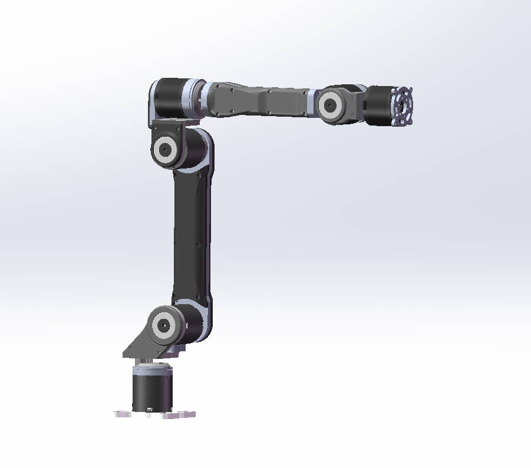
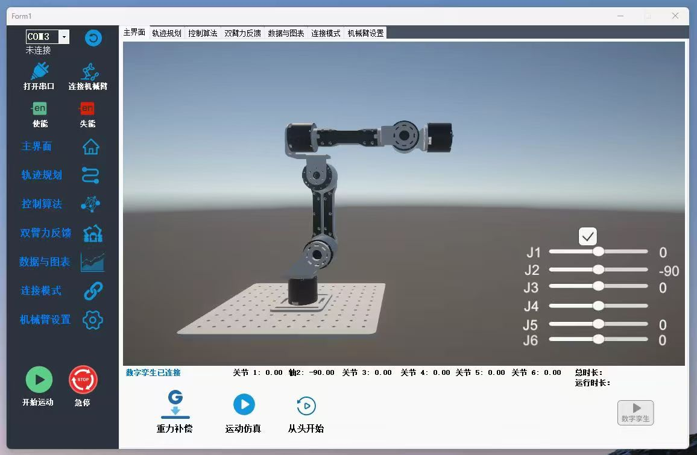
目录
项目简介
传统动力学控制实验通常依赖昂贵的工业机械臂、封闭的底层控制器，或只停留在仿真环境。INVrobot 具身智能机械臂希望提供一个更安全、更低成本、更容易二次开发的平台，用于：
- 验证 PID、动力学前馈 + PID、阻抗控制、基于计算力矩法的滑模控制等传统控制算法；
- 开发和测试正逆运动学、速度/加速度正逆解、雅可比矩阵、动力学方程、摩擦补偿等模型算法；
- 通过灵活末端执行器采集操作数据，并接入 LeRobot 进行模型训练和部署；
- 在上位机中通过 Unity 数字孪生实时查看机械臂姿态和关节状态。
当前资料中包含两类原型方向：
| 模式 | 主要用途 | 控制模型 | 说明 |
|---|---|---|---|
| 动力学算法平台 | 传统控制理论与模型控制算法验证 | 电机力矩控制 | C# 控制框架，底层控制频率约 500 Hz |
| LeRobot 数据平台 | 末端操作、数据采集、模型训练与部署 | 电机位置控制 | 末端更灵活，适合采集具身智能任务数据 |
| 三合一夹爪 | 抓取与交互任务 | 力位混合控制 | 支持功能切换，并可控制夹爪输出力度 |
核心特性
| 特性 | 说明 |
|---|---|
| 具身 6 轴机械臂 | 参考工业 6 轴机械臂构型，面向实验室和教学科研场景 |
| CAN 总线通讯 | 上位机通过 USB 转 CAN 模块与机械臂通讯 |
| 实时控制架构 | 依托计算机算力和高精度定时器，目标控制频率 500 Hz 至 1 kHz |
| 内置算法库 | 正逆运动学、速度/加速度映射、雅可比矩阵、动力学方程、摩擦补偿 |
| 控制算法 | PID、动力学前馈 + PID、阻抗控制、基于计算力矩法的滑模控制 |
| WinForms 上位机 | 串口/CAN 连接、使能/失能、零点设置、算法选择、参数调节、安全限位 |
| 数字孪生 | Unity 仿真程序嵌入上位机，实时显示机械臂位姿 |
| 数据可视化 | 位置、速度、加速度、力矩反馈和轨迹图表 |
| LeRobot 接入 | 打通数据采集、模型训练、模型部署的完整流程 |
| 低成本开放设计 | 具身结构和底层控制接口，降低动力学算法实验门槛 |
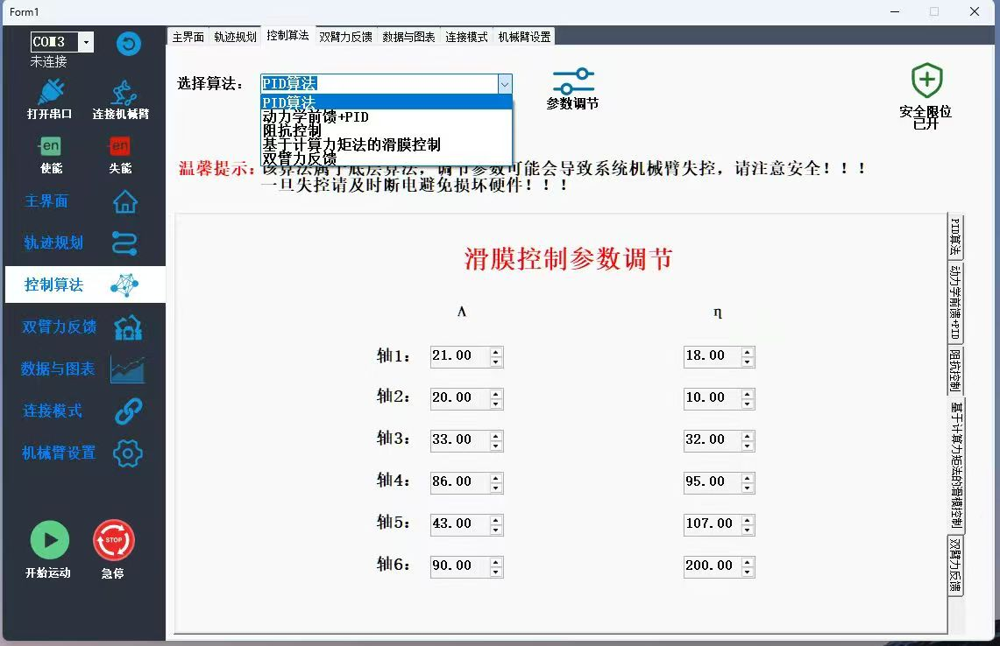
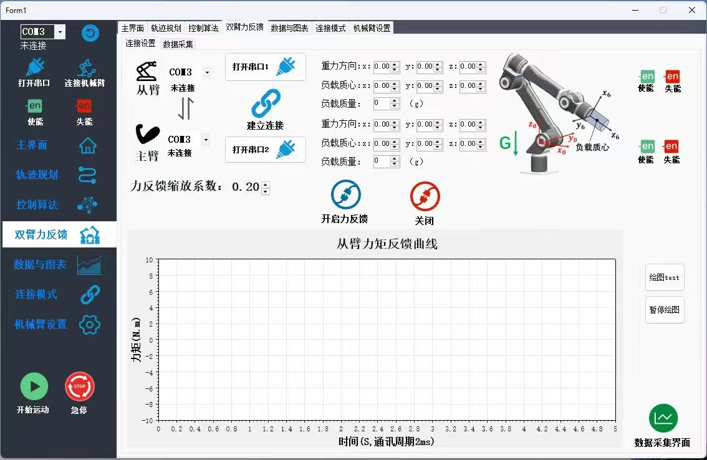
功能演示
VLA 控制
主从控制
拖拽示教
搭配三指夹爪移动水瓶
搭配灵巧手操作屏幕
视觉追踪人手移动
系统架构
flowchart LR
User["用户"] --> UI["WinForms 上位机<br/>UI 控制与数据分析"]
UI --> Timer["高精度定时器<br/>毫秒级调度"]
Timer --> Algo["动力学控制算法<br/>PID / 前馈 / 阻抗 / 滑模"]
Algo --> Model["运动学与动力学模型<br/>正逆解 / 雅可比 / 摩擦补偿"]
Algo --> CAN["USB 转 CAN 模块"]
CAN --> Arm["具身 6 轴机械臂"]
Arm --> Sensor["关节角度 / 速度 / 力矩反馈"]
Sensor --> CAN
CAN --> UI
UI --> Twin["Unity 数字孪生"]
平台将模型计算和控制调度放在上位机侧完成，充分利用计算机多核 CPU 的算力。相比仅基于单片机的方案，该架构更适合运行动态雅可比更新、模型补偿、滑模控制等复杂算法，同时保持具身机械结构的安全性和可维护性。
硬件组成
| 项目 | 说明 |
|---|---|
| 机械臂本体 | 具身 6 轴机械臂，参考工业六轴机械臂构型 |
| 臂展与负载 | 当前原型资料：臂展约 600 mm，负载约 2 kg |
| 通讯方式 | USB 转 CAN 模块 |
| 执行器 | 支持力矩控制和位置控制两类原型方向的关节电机 |
| 结构材料 | 关键受力部件使用铝合金，外壳和定制辅助件可使用 3D 打印 |
| 末端执行器 | 三合一夹爪，支持力位混合控制 |
| 机械资料 | 机械三维资料位于 mechanical/ 目录 |

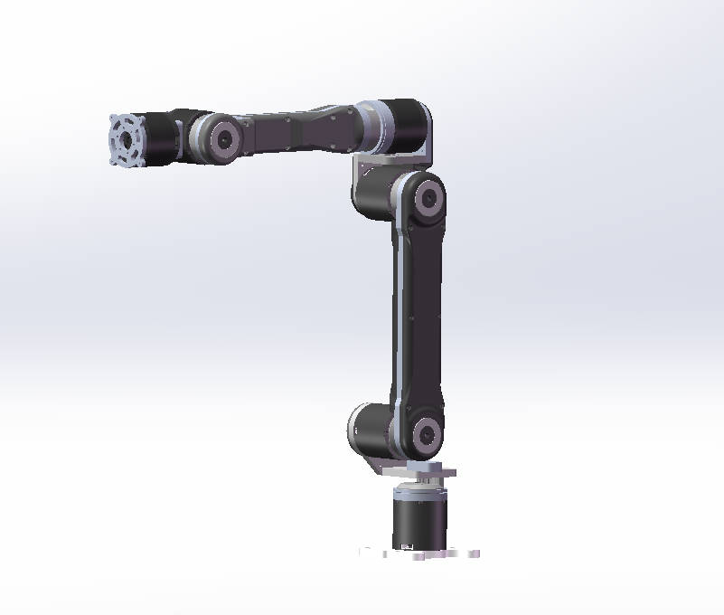
上位机软件
上位机基于 C# WinForms 开发，集成通讯连接、模型计算、轨迹规划、控制算法选择、参数调节、反馈可视化和 Unity 数字孪生。
主要模块包括：
- 机械臂连接、通讯建立、使能和失能；
- 零点设置与关节状态初始化；
- 预设轨迹生成、拖动示教、导入轨迹运行；
- 运动学和动力学解析算法库；
- PID、动力学前馈、阻抗控制、滑模控制等算法切换；
- 摩擦模型辨识与摩擦补偿；
- 位置、速度、加速度、力矩等实时图表；
- Unity 数字孪生位姿显示。
当前上位机依赖包放置在 上位机安装包/ 目录。
LeRobot 流程
INVrobot 具身智能机械臂计划同时作为动力学算法平台和 LeRobot 兼容的具身智能实验平台。
flowchart LR
Collect["采集示教数据<br/>机械臂 + 夹爪 + 相机"] --> Dataset["转换为 LeRobot 数据集"]
Dataset --> Train["训练策略模型<br/>ACT / Diffusion / 其他策略"]
Train --> Eval["任务评估"]
Eval --> Deploy["部署到 DM-ABB 机械臂"]
Deploy --> Collect
计划开源的 LeRobot 相关模块：
- 机械臂读写接口适配器；
- 数据采集脚本；
- 标定和设备配置示例；
- 数据集转换工具；
- 训练和部署示例；
- 末端操作任务示例。
仓库结构
.
├── mechanical/ # 机械三维资料压缩包
├── pictures/ # README 展示图与上位机截图
├── 上位机安装包/ # 上位机依赖包
├── 机械臂介绍(6).pdf # 原型说明资料
├── README.md
└── README_CN.md
完整开源后建议整理为：
.
├── docs/ # 装配、接线、标定和安全文档
├── mechanical/ # STEP / STL / 源 CAD 文件
├── hardware/ # BOM、接线图、CAN 设备说明
├── software/
│ ├── host_app/ # C# WinForms 上位机源码
│ ├── unity_twin/ # Unity 数字孪生项目
│ └── firmware_or_driver/ # CAN 驱动与底层设备适配
├── lerobot_dm_abb/ # LeRobot 适配器与示例
├── examples/ # 控制算法和操作任务示例
└── pictures/
快速开始
仓库仍处于完整公开前的整理阶段。预期使用流程如下：
- 根据机械文件和 BOM 准备硬件。
- 安装 USB 转 CAN 适配器驱动。
- 安装上位机软件依赖。
- 通过 CAN 连接机械臂并打开上位机。
- 设置机械臂零点并使能关节。
- 选择控制算法并调节参数。
- 运行轨迹规划、数据可视化或 LeRobot 数据采集。
安全注意事项：
- 使能电机前确认急停可用。
- 第一次测试时使用低速度、低力矩、空载运行。
- 运行轨迹前确认关节限位和零点正确。
- 新控制算法建议先在仿真或空载状态下验证。
开发计划
- 公开完整 STEP/STL 机械文件。
- 添加 BOM、装配指南和接线指南。
- 开源 C# WinForms 上位机源码。
- 公开 Unity 数字孪生项目。
- 补充 CAN 通讯协议文档。
- 添加动力学算法与摩擦补偿示例。
- 开源 LeRobot 机械臂适配器。
- 添加数据采集、训练和部署教程。
- 添加示例数据集和基准任务。
- 完善中英文文档。
贡献
完整公开后欢迎参与贡献，方向包括：
- 机械结构改进；
- 上位机和 UI 优化；
- 新控制算法；
- LeRobot 接入和数据集工具；
- 操作任务示例和 benchmark；
- 文档、教程和安全检查。
致谢
本项目受到开源机器人和机器人学习项目的启发，特别感谢：
- LeRobot，降低了真实机器人学习的使用门槛；
- LeRobot-Anything-U-Arm，提供了清晰的开源项目组织方式和 LeRobot 工作流参考；
- 开源机器人社区。
许可证
开源许可证尚未最终确定。正式公开前建议补充 LICENSE 文件。
项目简介
本项目面向柔性布料操作（如抓取、平移、折叠等）的机器人学习任务，提供了一套完整的算法模型训练与部署流程。核心包括：
- 数据采集：支持遥操作（Teleop）、纯策略推理（Policy）和混合模式（Mixed + DAgger），可同时采集专家数据、推理数据和人工干预数据，输出符合 LeRobot 格式的数据集。
- 策略模型微调：基于 π0.5 视觉‑语言‑动作（VLA）模型进行微调，支持带/不带 Advantage 条件的训练，适配双臂 14 维动作空间。
- 价值模型与 Advantage 标注：在 π0.5 骨架上附加价值头，分两阶段（Progress Loss + TD Learning）训练，为数据集中的每个动作块计算 action_advantage，用于后续优势条件化策略训练。
- 世界模型训练：基于 LTX‑Video 的扩散式世界模型，学习在给定动作条件下预测未来多视角视频帧，为在线强化学习提供想象环境。
- 在线策略自提升：参考 RISE 框架，利用世界模型（WM）和奖励模型（RM）生成想象 rollout，通过优势信号（GAE）对策略进行在线 RL 微调，实现无需真实试错的策略自我提升。

| 阶段 | 所需资源 |
| 数据采集 | 机械臂 |
| π0.5 V0模型训练 | GPU服务器 |
| Policy WebSocket 远程服务 | Jetson Orin NX Super客户端 |
| DAgger人工干预数据采集 | 机械臂、GPU服务器 |
| 价值模型训练 | GPU服务器 |
| Advantage策略模型训练 | GPU服务器 |
| 世界动力学模型训练 | GPU服务器 |
| 基于世界模型的在线强化 | GPU服务器 |
本仓库所使用的框架基于Lerobot框架，使用的机械臂为非官方提供；
如需更换其它机械臂，需自己手动集成到本仓库提供的框架。
在自己的数据上使用模型
### 最低硬件配置要求
要运行本仓库中的模型，需要至少符合以下规格的NVIDIA显卡。
| 模式 | 所需显存（近似值） | 示例GPU型号 |
| 推理 (Inference) | > 8 GB | RTX 4090 (48G) |
| 全参数微调 (Fine-Tuning, Full) | > 70 GB | RTX 4090 (48G) × 2 |
注意：本仓库暂未进行 LoRA 微调，如有需要，需自行测试。

效果展示
双臂柔性上筒子布（我方方案）

桶装布料上料（对比方案）

0、环境安装
# 仓库克隆
git
# 一键安装所有子模块
cd INV
bash install.sh
1. 数据采集 (robodeploy/)
使用 robodeploy 包进行遥操作录制和策略推理数据采集。
cd robodeploy
# 推荐方式：Shell 脚本启动（交互式菜单选择控制模式）
bash scripts/record_hybrid.sh
Shell 脚本快速配置区 (scripts/record_hybrid.sh 顶部)：
（这里我们使用的示例双臂机器人名称为**bi_s1，**实际使用过程中需要配置自己的双臂机器人）
| 变量 | 说明 | bi_s1 示例值 |
ROBOT_TYPE |
机器人类型 | bi_s1_follower |
TELEOP_TYPE |
遥操作主端类型 | bi_s1_leader |
LEFT_FOLLOWER_PORT |
左臂从端串口 | /dev/left_follower |
RIGHT_FOLLOWER_PORT |
右臂从端串口 | /dev/right_follower |
LEFT_LEADER_PORT |
左臂主端串口 | /dev/left_leader |
RIGHT_LEADER_PORT |
右臂主端串口 | /dev/right_leader |
POLICY_TYPE |
策略客户端类型 | openpi |
OPENPI_HOST / OPENPI_PORT |
策略服务地址 | localhost / 8000 |
CAMERA_CONFIG |
摄像头 JSON 配置 | 见脚本内示例 |
OUTPUT_DIR |
数据输出目录 | ./s1_data |
REPO_ID |
数据集标识 | lerobot/bi_s1_0522_2 |
TASK |
任务描述 | hang cloths |
FPS |
采集帧率 | 30 |
EPISODE_TIME_S |
单 episode 最大时长 | 6000 |
CONTROL_MODE |
运行时交互选择 | teleop / policy / mixed |
USE_TEMPORAL_SMOOTHING |
策略推理时序平滑 | true |
INFERENCE_RATE |
推理频率 (Hz) | 2.6 |
LATENCY_K |
丢弃旧块步数 | 12 |
MIN_SMOOTH_STEPS |
重叠区最小长度 | 8 |
三种控制模式：
| 模式 | 说明 | 需要 Policy 服务 |
teleop |
纯遥操作录制（专家数据） | 否 |
policy |
纯策略推理（推理数据） | 是 |
mixed |
混合模式（P 键实时切换，进行人工干预） | 是 |
键盘操作：
| 按键 | 功能 |
R |
开始/停止录像 |
S |
保存 episode + 成功/失败标注 (1=失败, 0=成功, 2=丢弃) |
P / Tab |
切换 Teleop ↔ Policy（仅 mixed 模式） |
Z |
机械臂归零复位 |
Esc |
退出 |
输出目录结构 (LeRobot 格式)：
output_dir/
├── meta/
│ ├── info.json # 数据集元信息
│ ├── episodes.jsonl # episode 摘要
│ └── tasks.jsonl # 任务索引
├── data/
│ └── chunk-000/
│ └── episode_000000.parquet
└── videos/
└── chunk-000/
├── front/
├── left_wrist/
└── right_wrist/
合并多个数据集：
python scripts/merge_lerobot_datasets.py --input-dirs <dir1> <dir2> --output-dir <merged_dir>
2. Policy 训练统计值计算 (policy_and_value/policy_offline_and_value/)
在训练前需要计算数据集的归一化统计量 (mean/std)。
cd policy_and_value/policy_offline_and_value
# 使用 Compute_norm 配置计算统计量（不需要 GPU）
python scripts/compute_norm_stats_fast.py --config-name Compute_norm
注意：运行前需确认
config.py中Compute_norm配置的repo_id指向正确的数据集路径。 bi_s1 默认数据集路径：/home/kemove/RISE/deploy/data_collection/s1_data/lerobot/bi_s1_full_merged统计量输出到：data/norms/bi_s1_full_merged/
3. 离线 Policy 训练（π0.5）
cd policy_and_value/policy_offline_and_value
# 训练（PyTorch DDP）
bash train.sh <CONFIG> <GPU数> [EXP_NAME]
# bi_s1 示例：不带 advantage 条件的 π0.5 策略
bash train.sh BiS1_Pi05_style_training 8
bi_s1 相关 Config：
| Config 名称 | 用途 | 数据集 | 训练步数 |
Compute_norm |
计算归一化统计量 | bi_s1_full_merged |
- |
BiS1_Pi05_style_training |
π0.5 策略 (无 advantage) | s1_bimanual_0422_mixed |
100k |
BiS1_Policy_offline_release |
π0.5 策略 (带 advantage 条件) | bi_s1_full_mixed_w_adv |
30k |
关键训练参数 (在 config.py 中配置)：
| 参数 | 默认值 | 说明 |
batch_size |
32 | 每 GPU batch size |
num_train_steps |
30000 | 总训练步数 |
save_interval |
1000 | 检查点保存间隔 |
num_workers |
8 | 数据加载线程数 |
action_dim |
14 | 动作维度 (双臂 7×2) |
4. Policy WebSocket 服务
我们提供策略推理服务端和部署端分离，使用 WebSocket 实现。
训练完成后启动策略推理服务，供数据采集端和部署端连接。
cd policy_and_value/policy_offline_and_value
# 启动 WebSocket 策略服务
python scripts/serve_policy.py --port 8000 policy:checkpoint \
--policy.config BiS1_Policy_offline_release \
--policy.dir checkpoints/BiS1_Policy_offline_release/mix_failure/18000
# 带动作日志记录（JSONL 格式）
python scripts/serve_policy.py --port 8000 --log_file actions.jsonl policy:checkpoint \
--policy.config BiS1_Policy_offline_release \
--policy.dir checkpoints/BiS1_Policy_offline_release/mix_failure/18000
serve_policy.py 参数：
| 参数 | 说明 |
--port |
服务端口 (默认 8000) |
--default_prompt |
当数据中无 prompt 时的默认任务描述 |
--record |
录制策略行为用于调试 |
--log_file |
将每次推理的动作/状态写入 JSONL 文件 |
policy:checkpoint --policy.config |
训练配置名 |
policy:checkpoint --policy.dir |
检查点目录 |
开启上述服务端的策略推理服务之后，开启数据采集端和部署端的连接。注意控制模式模式需要为 policy 或者 mixed
cd robodeploy
# 推荐方式：Shell 脚本启动（交互式菜单选择控制模式）
bash scripts/record_hybrid.sh
注意：选择
mixed模式，可以进入混合模式（P 键实时切换，进行人工干预），人工干预保存的数据可加入数据集进行数据集增强
5. 价值模型训练
价值模型在 Policy backbone 上附加 Value Head (3层 MLP)，分两阶段训练。
cd policy_and_value/policy_offline_and_value
# 方式一：手动分步训练
# Stage 1: 仅 Progress Loss（预训练 value head）
bash train.sh BiS1_value_release_stage1 8
# Stage 2: Progress Loss + TD Learning（微调，从 stage1 的 4000 步 checkpoint 恢复）
bash train.sh BiS1_value_release 8
# 方式二：自动链式训练（stage1 → stage2 自动衔接）
bash scripts/train_bis1_value_chain.sh 8
bi_s1 价值模型 Config：
| Config 名称 | 阶段 | 特点 | 训练步数 |
BiS1_value_release_stage1 |
Stage 1 | Progress Loss only, TD disabled | 4k |
BiS1_value_release |
Stage 2 | Progress + TD Loss (γ=0.995, τ=0.01) | 20k |
关键参数：
| 参数 | 值 | 说明 |
value_gamma |
0.995 | TD 折扣因子 |
value_TD_TAU |
0.01 | 目标网络软更新系数 |
value_failure_reward |
-1.0 | 失败 episode 的终端奖励 |
value_terminal_window |
10 | 终端奖励窗口大小 |
loss_value_use_bce |
False | 使用 MSE loss |
p_with_progress_loss |
1.0 | Progress loss 概率 |
6. Advantage 标注与模型训练
用训练好的价值模型对数据集逐帧推理 frame_value，计算 action_advantage。
cd policy_and_value/policy_offline_and_value
# 一键标注（三步自动完成：推理 frame_value → 写入 parquet → 计算 advantage）
bash label_value.sh BiS1_value_release checkpoints/BiS1_value_release/BiS1_value_release/18000
# 输出：数据集目录_w_adv/ （parquet 新增 frame_value, frame_value_smooth, action_advantage 列）
三步流水线 (examples/label_frame_value.py)：
| 步骤 | 说明 |
| 1. 模型推理 | 逐 batch 推理每帧 frame_value，写入临时 .npy |
| 2. 写入列 | add_column_from_disk() 将 frame_value 追加到 parquet |
| 3. 计算 advantage | smooth_value_and_compute_advantage() 计算 frame_value_smooth 和 action_advantage |
advantage 计算公式 (MODE=v1)：
action_advantage[t] = avg(V[t+1], ..., V[t+CHUNK_SIZE]) - V[t]
然后 × ADVANTAGE_SCALER
专家/推理数据混合处理（数据集含 is_infer_data 字段时自动区分）：
- 专家数据 (
is_infer_data=0)：action_advantage = 1.0（恒定，完全模仿专家） - 推理数据 (
is_infer_data=1)：从 frame_value 计算 advantage
关键参数 (对齐 RL 配置 rl_release_bi_s1_wm_rm.yaml)：
| 参数 | 脚本变量 | 默认值 | RL 配置对应 |
| 前瞻步数 | CHUNK_SIZE |
50 | num_action_chunks: 50 |
| 放大因子 | ADVANTAGE_SCALER |
5.0 | advantage_scale: 5 |
| 平滑窗口 | N_SMOOTH |
3 (当前关闭) | - |
纯专家数据快速标注（不经过价值模型）：
# 直接给所有帧赋 action_advantage = 1.0
python examples/aloha_real/add_reward_quality_label.py
# 修改脚本中的 data_roots 为数据集路径，输出 _w_adv_expert/
可视化已标注数据（离线，不跑模型）：
python examples/visualize_frame_value_and_advantage.py \
--dataset_root <数据集>_w_adv \
--chunk chunk-000 \
--output_dir ./visual_labeled
# 输出: visual_labeled/<数据集名>/episode_000000_vis.mp4
可视化价值模型预测（在线，加载模型推理）：
python examples/visualize_value_only.py \
--config_name BiS1_value_release \
--ckpt_dir path/to/checkpoint \
--output_dir ./value_vis \
--max_vis_episodes 5 \
--split all \
--headview_only
标注脚本可选参数：
| 参数 | 默认值 | 作用 |
--split |
all |
数据集分片 (all / val_tasks / heldout_tasks) |
--batch_size |
64 |
推理 batch size |
--with_vis / --no-with_vis |
默认开 | 推理时是否同步生成可视化 |
--max_vis_episodes |
3 |
最多可视化 episode 数 |
--headview_only |
False | 只显示 front 视角 |
--metric_only |
False | 只统计数值，跳过所有视频渲染 |
标注完成后，训练****带 advantage 条件的 π0.5 策略
cd policy_and_value/policy_offline_and_value
# bi_s1 示例：不带 advantage 条件的 π0.5 策略
bash train.sh BiS1_Policy_offline_release 8
7. 世界模型训练 (dynamics/dynamics_model/)
基于 LTX-Video 的扩散世界模型，用于预测动作条件下的未来视频帧。
7.1 下载预训练权重
cd dynamics/dynamics_model
bash download.sh
7.2 视频预处理
将数据集视频缩放到 256×192（动力学模型所需尺寸）。
# 预处理指定数据集（支持绝对路径或相对 dataset/ 下的目录名）
bash preprocess.sh bi_s1_full_merged
# 或指定绝对路径
bash preprocess.sh /path/to/dataset
7.3 计算动作归一化统计量
# 计算动作统计量并保存到 JSON 配置文件
python norm.py \
--dataset-dir /home/kemove/RISE/deploy/data_collection/s1_data/lerobot/ \
--datasets bi_s1_full_merged \
--save-config /home/kemove/RISE/deploy/data_collection/s1_data/lerobot/bi_s1_full_merged/norm_stats.json
7.4 微调训练
# 使用 torchrun 启动训练
bash scripts/train.sh main.py configs/ltx_model/finetune.yaml
训练前需确认 finetune.yaml 中的路径：
| 配置项 | 说明 | bi_s1 示例值 |
pretrained_model_name_or_path |
LTX backbone 权重路径 | .../checkpoints/ |
diffusion_model.model_path |
扩散模型权重路径 | .../checkpoints/dynamics_model/pretrained/ |
data.train.data_roots |
训练数据根目录 | [.../s1_data/lerobot/] |
data.train.domains |
数据集名称 | ['bi_s1_full_merged'] |
data.train.norm_config_path |
归一化统计量路径 | .../bi_s1_full_merged/norm_stats.json |
data.val.* |
验证集配置（同训练集结构） | 同上 |
关键训练参数：
| 参数 | 默认值 | 说明 |
train_steps |
50000 | 总训练步数 |
batch_size |
32 | 每 GPU batch size |
lr |
1e-4 | 学习率 |
chunk |
25 | 预测帧数 (25帧 @ 15Hz = 1.67s) |
action_chunk |
50 | 动作块大小 (stride 2 → 15Hz) |
n_previous |
4 | 输入帧数 |
sample_size |
[192, 256] | 视频尺寸 (H×W) |
action_in_channels |
14 | 动作维度 |
valid_cam |
3 个视角 | front, left_wrist, right_wrist |
steps_to_save |
1000 | 检查点保存间隔 |
8. 基于在线 RL 策略自提升 (policy_and_value/policy_online/)
在线强化学习微调策略，支持世界模型 (WM) + 奖励模型 (RM) 生成 imagined rollouts。
cd policy_and_value/policy_online
# 启动在线 RL 训练（使用 bi_s1 WM+RM 配置）
bash examples/embodiment/run_embodiment.sh rl_release_bi_s1_wm_rm
bi_s1 RL 配置 (examples/embodiment/config/rl_release_bi_s1_wm_rm.yaml)：
| 参数 | 值 | 说明 |
experiment_name |
bi_s1_rl_wm_rm_mixed |
实验名称 |
algorithm.policy_config_name |
BiS1_Policy_offline_release |
基础策略配置 |
algorithm.adv_type |
gae |
优势估计算法 |
algorithm.loss_type |
actor_critic |
损失类型 |
algorithm.gamma |
0.99 | RL 折扣因子 |
algorithm.gae_lambda |
0.95 | GAE λ 参数 |
algorithm.with_advantage_condition |
True | 启用 advantage 条件 |
algorithm.wm_action_interval |
2 | WM 动作间隔 |
Actor 关键配置：
| 参数 | 值 | 说明 |
model.model_type |
openpi |
模型类型 |
model.action_dim |
14 | 动作维度 |
model.num_action_chunks |
50 | 动作块大小 |
model.add_value_head |
True | 启用 value head |
openpi.add_dynamics_model |
True | 启用世界模型 |
openpi.dynamics_model_config |
...infer_s1.yaml |
WM 推理配置 |
openpi.add_reward_model |
True | 启用奖励模型 |
openpi.reward_model_config |
BiS1_value_release |
RM 配置 |
openpi.train_mode |
IL |
训练模式 (Imitation Learning + RL) |
openpi.advantage_scale |
5 | Advantage 缩放因子 |
optim.lr |
1e-6 | 策略学习率 |
optim.value_lr |
2e-4 | Value head 学习率 |
fsdp_config.sharding_strategy |
full_shard |
FSDP 分片策略 |
注意：在线 RL 的 checkpoint 为 DCP (Distributed Checkpoint) 格式，部署前需用
convert_dcp_to_state_dict.py转为 PyTorch state dict。
重要提醒
install.sh会 patchtransformers包（第 18 行）- 在线 RL 的 checkpoint (DCP 格式) 需先
convert_dcp_to_state_dict.py转为 PyTorch state dict 才能部署 - 动作归一化常量为数据集特定，定义在
dynamics/dynamics_model/data/utils/constants.py - 世界模型训练前需先运行
norm.py生成norm_stats.json - Value model stage2 自动从 stage1 的 4000 步 checkpoint 恢复训练
- 各训练配置文件中的数据集路径、checkpoint 路径使用绝对路径，迁移环境时需对应修改
- 数据采集使用
robodeploy/scripts/，不再使用deploy/data_collection/ - 策略服务器连接错误：检查服务器是否在预期端口运行并监听；检查客户端和服务器之间的网络连接和防火墙设置
- 数据集下载失败：检查网络连接；对于 HuggingFace 数据集，请确保已登录
基本概念补充
模型架构
┌─────────────────────────────────────────────────────────────────────┐
│ 数据采集层 (Data Collection) │
├─────────────────────────────────────────────────────────────────────┤
│ 1. 遥控操作 (Teleop) - 人工远程操控收集示范数据 │
│ 2. 策略推理 (Policy) - 使用已有策略进行自主操作 │
│ 3. 混合模式 (Mixed) - Teleop与Policy混合模式 │
│ 4. DAgger干预 (Correction) - 人工干预和纠错 │
│ │
│ 产出：LeRobot格式数据集（多视角视频 + 动作序列） │
└─────────────────────────────────────────────────────────────────────┘
│
▼
┌─────────────────────────────────────────────────────────────────────┐
│ 离线训练层 (Offline Training) │
├─────────────────────────────────────────────────────────────────────┤
│ 核心任务：π0.5 策略微调 │
│ - 支持advantage条件 │
│ - 使用Flow matching目标函数 │
│ - 以动作块(chunk=50)为单位处理数据 │
│ │
│ 价值模型： │
│ - 架构：π0.5 骨干 + MLP头 │
│ - Stage1: Progress Loss │
│ - Stage2: TD Loss │
└────────────────────────────────────────────────────────────────────┘
│
▼
┌─────────────────────────────────────────────────────────────────────┐
│ 优势标注模块 (Advantage Annotation) │
├─────────────────────────────────────────────────────────────────────┤
│ 计算公式： │
│ action_advantage = avg(v[t+1 .. t+50]) - v[t] │
│ │
│ 功能：计算50个时间步内价值函数平均值，减去当前价值，衡量动作长期优势 │
└─────────────────────────────────────────────────────────────────────┘
│
▼
┌─────────────────────────────────────────────────────────────────────┐
│ 世界模型层 (World Model / Dynamics Model) │
├─────────────────────────────────────────────────────────────────────┤
│ 模型：基于LTX-Video架构的扩散模型 │
│ 输入：历史帧 + 动作序列 │
│ 输出：预测未来25帧多视角视频(256x192, 15Hz) │
└─────────────────────────────────────────────────────────────────────┘
│
▼
┌─────────────────────────────────────────────────────────────────────┐
│ 在线强化学习自提升层 (RISE风格) │
├─────────────────────────────────────────────────────────────────────┤
│ 框架：Actor-Critic架构 │
│ 核心机制： │
│ - 世界模型想象推演 (WM imagination rollout) │
│ - 奖励模型计算GAE优势 (RM for GAE) │
│ 产出：优化后的π0.5策略 │
└─────────────────────────────────────────────────────────────────────┘
│
▼
┌─────────────────────────────────────────────────────────────────────┐
│ 部署推理(Jetson Orin Nx) │
└─────────────────────────────────────────────────────────────────────┘
柔性具身模型架构

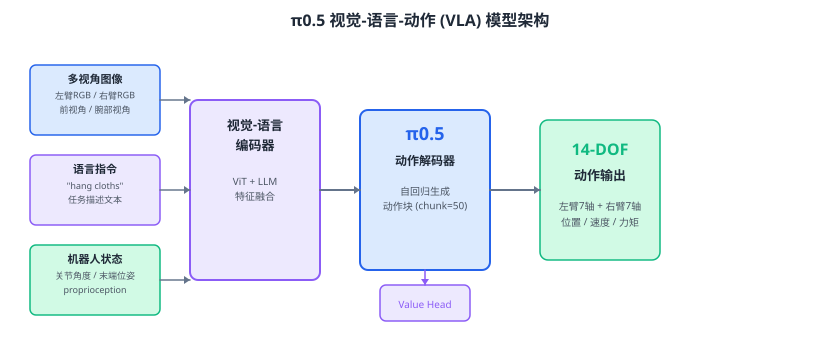
π0.5
该仓库的具身模型基于π0.5进行微调。π0.5 是由 Physical Intelligence 公司发布的视觉-语言-动作（VLA）模型，作为 π0 的迭代升级版本，其核心特点包括：
- 异构数据协同训练：融合多源异构数据进行联合训练，显著提升模型在陌生环境中的泛化能力，首次实现了端到端机器人在全新家庭环境中执行长时程灵巧操作任务（如叠毛巾、整理床铺等，单次任务持续 10–15 分钟）；
- 知识绝缘架构（π0.5-KI）：将动作专家模块模块化“嫁接”至视觉-语言模型，在增强动作生成能力的同时不侵蚀预训练的语义知识，实现“高效训练、强泛化、高精度运动控制”三重目标；
- 分层推理机制：先预测高层语义子任务，再执行低层连续动作，实现抽象任务指令到具体关节控制的端到端映射；
- GemmaRMSNorm 动态调节：在 Transformer 每一层动态调节归一化层，使模型在动作生成的不同阶段具有差异化行为，实现更精细的动作控制。
具体细节请参考：
- 参考论文：https://www.pi.website/blog/pi05
- 参考代码：https://github.com/Physical-Intelligence/openpi/tree/main
Advantage策略模型
Advantage策略模型，取自于 Physical Intelligence发布的 π*****0.6。其核心创新在于 RECAP 训练方法——通过“示范学习、纠错指导、自主实践”三阶段闭环，让机器人能够从真实执行中积累经验、从错误中自主成长，突破传统模仿学习的瓶颈。
- RECAP训练方法：全称为“基于优势条件策略的经验与纠偏强化学习”，该方法整合演示数据、在线自主收集的实践数据以及人类专家的干预数据，分为“示范学习、纠错指导、自主实践”三个阶段，使机器人能够从真实执行中积累经验、从错误中自主成长，彻底突破了传统模仿学习只能逼近“真值”的局限。
- 价值函数（Value Function） ：RECAP的核心组件之一，用于评估任务进展并预测完成某项任务所需的预期时间。该价值函数基于大规模多机器人多任务数据训练，能够为轨迹中的每个动作提供质量评估，从而区分“好动作”与“坏动作”。
- 优势信号（Advantage） ：价值函数计算出每个动作的实际回报与预测价值之间的差值，即优势值A(s,a) = Q(s,a)−V(s)。该优势值用于区分当前动作相比“平均表现”的优势程度，并通过二值化处理形成高/低优势指标，作为策略训练的额外输入，使模型能够在推理时强制选择高优势动作，从而直接从数据中提取出比原始数据更优的决策策略。
具体细节请参考：
基于世界模型的在线强化
该仓库的世界模型，取自于RISE（Reinforcement learning via Imagination for Self-Improving robots），面向真实世界机器人操作的在线强化学习框架，核心创新在于将物理环境交互迁移至想象空间，通过构建组合式世界模型实现策略持续自我提升。
主要特点：
- 组合式世界模型：将仿真任务解耦为动态模型（基于高效视频扩散模型，预测多视角未来状态）与价值模型（基于预训练 VLA 骨干，输出稠密进度信号），两者独立优化，兼顾视觉真实性与控制可控性。
- 想象空间在线强化学习：无需真实世界的昂贵、串行、需人工重置的试错交互，直接在想象环境中展开动作序列，由价值模型计算优势信号（Advantage） ，驱动策略更新，实现可扩展的在线策略学习。
- 策略预热与自循环提升：先通过离线数据（含专家演示、自主 rollout、人工纠正）进行优势条件化策略预热，再利用世界模型不断生成想象轨迹、评估优势、训练策略，形成闭环自提升。
具体细节请参考：
致谢
本项目受到开源机器人和机器人学习项目的启发，特别感谢：
- 开源机器人社区。
- π0.5 / π*0.6：感谢 Physical Intelligence 开源的 VLA 模型及 RECAP 训练方法，为本项目提供了策略基座和优势条件化学习框架。
- RISE：感谢 OpenDriveLab 提出的组合式世界模型与想象空间在线强化学习框架（论文 / 代码），本项目中的世界模型训练与在线 RL 自提升模块均参考其设计。
- LeRobot：感谢 Hugging Face LeRobot 提供的标准化数据集格式和数据采集工具，使本项目的多臂数据流程得以高效构建。
- Genie Envisioner / LTX‑Video：感谢相关团队开源的视频生成模型，为本项目世界模型的实现奠定了高效生成基础。
Retargeting Anything
超强通用运动映射算法与工具 — 将任意一种结构的运动，映射到任意的另一种结构上。
核心特性
- 任意结构支持：通过图/树表示支持任意骨骼拓扑（人形、机械臂、四足、自定义结构）
- 多种映射算法可切换：
映射器 适用场景 特点 direct拓扑相似结构 直接关节角度映射，支持缩放/偏移/混合 ik不同拓扑 任务空间关键点 + 逆运动学求解 end_effector拓扑差异大 末端执行器6D位姿跟踪（参考 TrajBooster） optimization高质量需求 带物理/几何约束的全局优化 composite复杂需求 组合多种映射策略（顺序/混合/分区） latent数据驱动 基于共享隐空间的神经网络映射（参考 ImitationNet） skeleton_agnostic未知对应 基于语义分组的自动映射（参考 PALUM） - 用户自定义映射配置：通过 YAML/JSON 定义任意关节到关节的映射规则
- 模块化设计：映射器可自由切换、组合、扩展
为什么需要 N→M 映射（NtoM Mapping）
问题背景
在机器人遥操作（Teleoperation）场景中，操作端（主手/采集设备/动作捕捉服）与执行端（从手/机器人/机械臂）几乎永远不是同构型的：
- 人形手套有 22 个关节，而目标灵巧手只有 11 个电机
- 动作捕捉服采集全身 50+ DOF，而目标机械臂只有 6 个旋转关节
- 主手是 3 自由度操纵杆，而目标是需要 多关节协调 的软体机器人
传统的 1:1 关节映射（N=M 且同构型）在此完全失效。我们必须回答一个问题：如何用 N 个输入自由度，去控制 M 个输出自由度？
NtoM 映射的本质
NtoM 映射系统是一个通用的自由度转换层，它不关心两端的具体机械结构是否相同，只关心：
输入端的 N 个自由度（关节角度、姿态、力、位移等）→ 通过某种映射规则 → 输出端的 M 个自由度（关节角度、电机转速、位置指令等）
映射方式可以是：
- 直接映射：一个输入关节对应一个输出关节（1:1）
- 线性映射：多个输入的加权线性组合对应一个输出（n:1）
- 非线性映射：通过 IK、优化、神经网络等引入非线性补偿
- 语义映射：基于身体部位分组（如"左臂"→"左臂"），忽略具体关节数量差异
系统示意图
┌─────────────────────────────────────────────────────────────────────┐
│ NtoM 映射系统架构 │
├─────────────────────────────────────────────────────────────────────┤
│ │
│ ┌──────────────┐ ┌──────────────┐ ┌─────────────┐ │
│ │ 输入端 │ │ 映射层 │ │ 输出端 │ │
│ │ (N DOF) │ ────► │ (N→M Mapping)│ ────► │ (M DOF) │ │
│ └──────────────┘ └──────────────┘ └─────────────┘ │
│ │ │ │ │
│ ▼ ▼ ▼ │
│ ┌──────────────┐ ┌──────────────┐ ┌─────────────┐ │
│ │ • 数据手套 │ │ • 直接映射 │ │ • 机械臂关节 │ │
│ │ • 动作捕捉 │ │ • 线性缩放 │ │ • 灵巧手电机 │ │
│ │ • 主手/操纵杆 │ │ • 非线性优化 │ │ • 移动底盘 │ │
│ │ • 肌电信号 │ │ • IK 求解 │ │ • 软体驱动器 │ │
│ │ • 语音/意图 │ │ • 神经网络 │ │ • ... │ │
│ └──────────────┘ │ • 语义分组 │ └─────────────┘ │
│ └──────────────┘ │
│ │
│ 核心能力： │
│ ┌─────────────────────────────────────────────────────────────┐ │
│ │ 不要求同构型 │ 支持 1~n → 1~m 任意对应 │ 支持异形结构操控 │ │
│ └─────────────────────────────────────────────────────────────┘ │
│ │
└─────────────────────────────────────────────────────────────────────┘
典型应用场景
| 场景 | 输入端 (N) | 输出端 (M) | 映射难点 |
|---|---|---|---|
| 人形→机械臂 | 人体右臂 7-DOF | 工业臂 6-DOF | 肩关节球关节 vs 串联旋转关节，需 IK 补偿 |
| 手套→灵巧手 | 数据手套 22-DOF | 欠驱动灵巧手 11-DOF | 多输入合并为少输出，需耦合矩阵 |
| 操纵杆→多机协同 | 3-DOF 摇杆 | 2 台 6-DOF 机械臂 | 1 个输入分配给 12 个输出，需语义分组 |
| 动作捕捉→四足 | 人体全身 50+ DOF | 四足腿 12-DOF | 完全不同的拓扑结构，需 Skeleton-Agnostic 映射 |
| 肌电→假肢 | 2~4 通道肌电信号 | 多自由度假手 | 极度欠驱动，需隐空间/神经网络映射 |
为什么这是遥操作的"刚需"
异构是常态，同构是例外
商业遥操作设备（如 SenseGlove、Leap Motion）与目标机器人的自由度几乎不可能一一对应。自由度冗余/欠缺的天然矛盾
人手臂有 7-DOF（冗余），工业臂通常 6-DOF（正好），欠驱动灵巧手可能只有 4-DOF（不足）。N≠M 是普遍情况。任务空间 vs 关节空间的鸿沟
操作者关心的是"末端去哪里"（任务空间），但机器人接收的是"电机转多少"（关节空间）。NtoM 映射系统正是架在这两者之间的转换层。灵活性的工程需求
遥操作场景经常变化（今天控机械臂，明天控灵巧手），需要一套与具体构型解耦的通用映射框架，而不是为每一对设备写硬编码。
快速开始
安装
pip install -e .
# 或安装可视化依赖
pip install -e ".[viz]"
Python API
from retargeting_anything import create_humanoid_skeleton, create_robot_arm_skeleton
from retargeting_anything.mappers import create_mapper
# 创建结构
source = create_humanoid_skeleton(scale=1.0)
target = create_robot_arm_skeleton()
# 加载/创建运动数据
source_motion = ...
# 创建映射器并执行映射
mapper = create_mapper("ik", source, target, position_scale=1.5)
target_motion = mapper.map_motion(source_motion)
CLI 工具
# 生成示例骨骼
retarget generate-skeleton --type humanoid --output human.json
retarget generate-skeleton --type robot_arm --output robot.json
# 执行映射
retarget map \
--source-skeleton human.json \
--target-skeleton robot.json \
--source-motion motion.npz \
--mapper ik \
--output result.npz
# 可视化
retarget visualize --motion result.npz --frame 0 --output frame.png
# 查看所有映射器
retarget list-mappers
自定义映射配置
name: my_custom_mapping
source_skeleton: human
target_skeleton: robot
global_settings:
position_scale: 1.5
mappings:
# 一对一映射
- source: right_shoulder
target: joint1
type: direct
# 带缩放映射
- source: right_elbow
target: joint2
type: scaled
scale: 1.2
# 多对一混合
- source: [left_shoulder, right_shoulder]
target: torso
type: multi_source
weights: [0.5, 0.5]
# 末端执行器映射
- source: right_wrist
target: end_effector
type: end_effector
技术背景
本项目基于以下机器人运动控制领域的映射算法研究：
- Configuration Space Retargeting：关节空间直接映射 [1]
- Task Space Retargeting + IK：任务空间映射 + 逆运动学 [2]
- Shared Latent Space (ImitationNet, Neural Latent Optimization)：跨结构共享隐空间 [3,4]
- Skeleton-Agnostic Networks (PALUM, SAN)：Transformer/GNN 处理任意拓扑 [5,6]
- End-Effector Trajectory Mapping (TrajBooster)：末端执行器作为共享接口 [7]
- Contact-Aware Retargeting：接触约束保持 [8]
项目结构
retargeting_anything/
├── core/ # 核心库（骨骼、运动、FK/IK、旋转表示）
├── mappers/ # 映射算法插件
├── config/ # 映射配置系统
├── utils/ # IO与可视化工具
├── cli.py # 命令行工具
└── tests/ # 测试
测试
python retargeting_anything/tests/test_basic.py
# 或
pytest retargeting_anything/tests/
示例
# 运行完整演示
python examples/demo_basic.py
bash examples/demo_cli.sh
参考文献
- Ayusawa & Yoshida, "Motion retargeting for humanoid robots based on simultaneous morphing parameter identification and motion optimization", 2017
- Elobaid et al., "Human-Robot Collaboration via Holistic Human Perception and Partner-Aware Control", 2020
- ImitationNet, "Unsupervised Human-to-Robot Motion Retargeting via Shared Latent Space", 2024
- "Efficient Human-Robot Motion Retargeting via Neural Latent Optimization", 2021
- PALUM, "Part-based Attention Learning for Unified Motion Retargeting", 2026
- SAN, "Skeleton-Aware Networks for Deep Motion Retargeting", 2020
- TrajBooster, "Cross-embodiment framework leveraging end-effector trajectories", 2025
- Contact-Aware Retargeting, "Contact-Aware Retargeting of Skinned Motion", ICCV 2021
License
MIT
多格式结构支持
支持的骨骼/结构格式（8种）
| 格式 | 扩展名 | 说明 |
|---|---|---|
| JSON | 自定义格式（原生） | |
| URDF | ROS机器人标准 | |
| MJCF | MuJoCo仿真 | |
| SDF | , | Gazebo仿真 |
| BVH | 动作捕捉 | |
| FBX | 3D动画（ASCII） | |
| glTF/GLB | , | Web3D标准 |
| C3D | 生物力学 |
自动格式检测
上传时自动根据扩展名和内容检测格式：
- → URDF解析
- → 自动区分MJCF/SDF/URDF
- → BVH解析（含运动数据）
- → FBX ASCII解析
- / → glTF解析
- → C3D解析
Web 可视化界面
项目包含一个完整的 Web 可视化平台，支持浏览器中直接进行运动映射和3D仿真展示。
启动 Web 服务
cd web
python app.py
# 或指定端口
python -c "from app import app; app.run(host='0.0.0.0', port=5001)"
然后打开浏览器访问 http://localhost:5001
Web 界面功能
- 上传结构：支持上传 JSON 格式的骨骼定义文件
- 生成示例：一键生成人形/机械臂骨骼，挥手/行走示例运动
- 11种映射算法：下拉选择，即时切换
- 3D 并排仿真：左侧源结构，右侧目标结构，Three.js 实时渲染
- 动画播放控制：播放/暂停/进度条/帧跳转
- 末端执行器轨迹：彩色轨迹线显示运动路径
- 关节 Hover 提示：鼠标悬停显示关节名称和坐标
- 导出结果：支持 NPZ / CSV 格式下载
Web 界面截图

"# 自动穿鞋带机
📄 本文档由 INVrobot 产品文档中心生成，仅供参考。
© 深圳市英诺维信自动化设备有限公司 本仓库代码与文档采用 自定义商业禁止闭源协议 授权， 禁止用于商业闭源目的。未经授权，不得修改、再分发或用于商业用途。
1. 设备简介
1.1. 设备名称
自动穿鞋带机设备
1.2. 市场上常见鞋面与鞋带产品简介
| 产品 | 种类 | 规格 | 材质 | 鞋眼片颜色 | 孔眼形状 | 孔数 | 孔距 | 鞋舌 | |
| 鞋面 | 运动鞋类 | 从童鞋到成年人 主流尺码：（女25~42码）（男35~46码） |
多种/复合 皮/革/布/网等 |
多种/复合 | 多种 园/方/椭圆等 有带鸡眼扣（铝/非金属/钢等等） |
4~10不等 | 不等，孔间距偏差大 | 有/无 有鞋舌的可能有挂带的鞋舌环（也叫定位袢） |
|
| 产品 | 种类 | 规格 | 材质 | 颜色 | 截面形状 | 长度 | 束头直径 | 束头形状/长度 | 穿绳花样 |
| 鞋带 | 运动鞋类 | 根据鞋的种类和孔位数，有不同的长度 | 涤纶（日常运动鞋主流）/高强度运动尼龙（锦纶）/纯棉（复古质感/丙纶/其他花式材质 | 各种 基础纯色/流行亮色/特殊质感的/ |
各种 扁平/圆/椭圆/方形/管状/空心圆绳 |
根据鞋孔数，长度不确定比如：4孔（60~70CM）8孔（140~150cm） | 各种 扁：3~6mm 圆：2.5~5 |
多种 根据不同用途的鞋子，范围从6~20 最通用的运动鞋8~12mm 我们拿到的样品是20mm |
各式各样，变化极大 |
1.3. 设备功能
本设备的核心功能涵盖以下几项关键自动化工序：
**● 鞋面自动夹紧定位：**人工上鞋面，双手启动，自动压紧，自动拉鞋跟；
● 鞋带自动夹紧预置：人工上鞋带，双手启动，自动对中压鞋带，束头插入定位工装。
**● AI鞋眼智能识别：**深度集成视觉与深度学习算法，实现鞋眼位置的的全自动智能识别，并自动生成对应的穿/拉鞋带伺服模组位移坐标。
**● X-Y-Z三轴模组机械手自动插鞋带：**上方X-Y-Z三轴伺服模组配有气动夹手，实现抓取鞋带、穿鞋带。
**● X-Y-Z三轴模组机械手自动拉/送鞋带：**下方X-Y-Z三洲伺服模组配有气动夹手，实现鞋带的下拉、向上举升；
**● 鞋带自动滚/拉：**下方安装有可进退并可打开的对滚装置，步进电机驱动，实现鞋带的向下滚拉，同时设计有拨绳装置，步进电机驱动，使得鞋带向一个方向下垂，避免向上送鞋带时对传送路径的干扰；
**● 信息化MES接入：**软件系统支持与工厂内部的 MES 系统无缝对接，实现设备运行
状态、产量数据的信息化管理。
2. 设备特点
整机的设计、生产与组装严格遵循以下工业级标准：
**● 九大总体设计原则：**设备研发完全围绕“标准化、模块化、可升级、低成本、可视化、
信息化、易维护、安全性、高效率”的原则闭环展开。
**● 长寿命高稼动率：**设备整体的工业设计寿命 ≧ 5 年，综合生产稼动率稳定保持95%
以上。
**● 极佳的抗故障稳定性：**设备的平均无故障工作时间 MTBF ﹥ 1000 小时，大幅降低
了停机维护成本。
**● 快捷的故障修复效率：**所有需要维修维护的部位皆具备良好的空间可达性与工具操作
空间，一般故障平均修复时间 MTTR ≤ 0.5h，重大故障平均修复时间 MTTR ≤ 24h。
3. 设备参数
3.1. 设备概述
3.1.1. 设备外观及功能分区
设备整体具备专业的工业造型设计，符合人机工程学，占地空间小，易操作易维护，设备主体为高强度钣金机架烤漆设计，设计有铝型材防护罩，采用优质PC做封装面板，设计有门易维护。
● 机架上层： 规划为多轴高速直线运动部件、相机、镜头、平面光源及鞋面、鞋带定位夹紧工装。
● 机架中层： 规划为多轴高速直线运动部件、底部辅助平面光源、鞋带滚动下拉装置，鞋带拨动装置、气动拉/送绳装置。
● 机架下部： 独立合理规划为电控箱、工控机等电器控制系统的专业安全组装区域，位
置位于下方两侧或后侧。
● 设备正面： 合理排布有工业视觉检测显示器、设备操作触摸屏及常用控制按钮，工装上下料高度完全便于人工无疲劳进行日常作业。
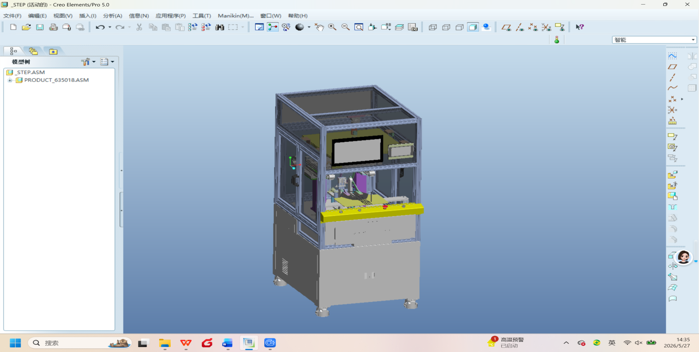

3.1.2. 设备清单
| 序号 | 部组 | 部件名称 | 核心规格 / 品牌选型 | 数量 | 单位 | 备注 |
|---|---|---|---|---|---|---|
| 1 | 主控系统 | PLC控制 | 三菱、威纶通 | 1 | 套 | |
| 2 | 核心驱动 | 步进套装 | 雷赛 | 1 | 套 | X-Y-Z移动轴 |
| 3 | 滚动摩擦拉绳 | 步进套装 | 雷赛 | 1 | 套 | 驱动拉绳摩擦滚轮 |
| 4 | 智能视觉 | 工业相机 | 海康威视 (1200W像素，型号: MV-CS050-10GM) | 1 | 台 | |
| 5 | 视觉组件 | 工业镜头 | 海康 （型号: MVL-MF2518M-5MPE) | 1 | 个 | 工业低畸变 |
| 6 | 照明系统 | 光源及控制器 | 顺尚信 (定制，上光源型号: KP-600-600-K50，下光源型号：KP-200-200；控制器型号：KWDC2-24V200W-4HT) | 1 | 套 | 高清晰度识别 |
| 8 | 鞋面定位 | 鞋面夹紧、鞋跟 | SMC | 1 | 套 | |
| 9 | 鞋带操作机构 | 拔/插、居中夹紧 | SMC | 1 | 套 | |
| 9 | 地脚定位 | 可移动固定地脚 | 原厂定制福马脚轮 | 4 | 个 | 支持整机移动固定 |
| 10 | 系统运算 | 主控工控机 工业显示器 |
国产优质 | 1 | 台 |
3.1.3. 设备工艺流程
根据项目技术源码与设计说明，本设备的自动化运行与工艺维护细化分为以下三种独立的完整流程：
A. 标准规范的开机程
工厂气源接通： 首先接通裁剪车间的外部气源，使用调节阀确保主管道气源压力大于等于 0.6 Mba。
电气强电接通： 引入 AC 220V 设备总电源，将机体外部负荷开关手动打到“ON”状态。
内部弱电使能： 依次合上电控箱内部低压断路器，将弱电电源开关切换至接通状态。
系统层软件加载： 启动电脑工控机，运行上位机设备软件，软件自动通过网线连接PLC主逻辑控制器。
**工艺配方参数调用：**PLC与工控机联网通讯，读取当前的系统参数、轴配置参数以及上一次生产所保留的配方参数。
视觉及硬件初开： 软件底层初始化相机连接，加载相机日常畸变校正参数与工位世界坐标标定矩阵。
硬件释能与复位： 现场人员手动松开设备的急停按钮，按操作界面的“复位”按钮，让整机执行一次完备的空载复位回零程序。
换款与配方： 根据当前工艺任务，在主界面配方下拉框中选择对应产品配方，系统自动加载鞋面型号、相机的曝光、增益、点位信息以及运行速度等参数。
首件确认： 放需要生产的鞋面型号到工装上，双手启动，鞋面自动夹紧，鞋带自动夹紧，视觉系统拍照，完成一整套的自动穿鞋带动作，确认合格后保存参数并进入连续生产模式。
B. 整机复位初始化与安全零位恢复流程
中断及输出关断： 当操作员下发复位指令或设备触发异常后，系统立即停止当前的一切轴运动，并同步切断所有相关的输出信号。
软限位临时解除： 临时解除PLC内部的软限位保护，防止各轴在执行大范围回零动作的过程中误触发软限位锁死。
X-Y-Z机械工作台回零： 上层和下层直线运动 模组X-Y-Z 平台按安全步距回零，控制系统通常遵循先执行 X 轴回零、再执行 Y 轴回零的物理顺序。
机构安全姿态回归： 鞋面压紧装置在上层模组回零后再执行打开动作；下层夹、拉、滚绳装置复位回零后再执行下层模组会令动作；各机构做好安全互锁和连锁。
到位信号安全检查： PLC持续检查各轴、气缸和传感器的到位输入信号，严格确认各个运动机构与装置均已安全到达指定基准位。
C. 自动加工标准循环流程
工位准备与上料： 操作员将鞋面放入定位工装，鞋带预置到定位工装上，双手启动，自动夹紧鞋面和鞋带。
联动打光调稳： 自动启动制工业光源，系统软件在底层自动执行延时，等待光照完全稳定。
数字单次采图： 上位机输出精密相机触发信号，海康相机完成高质量的单次采图，图像数据被实时压入图像缓存或处理队列中。
畸变校正处理： 视觉识别线程实时读取最新缓存图像，并根据当前相机的物理标定参数自动执行镜头的畸变校正。
深度AI特征匹配： 软件自动加载当前产品配方对应的路径模型或识别模板，执行多点匹配或区域识别，经过亚像素级优化筛选，精准生成图像点坐标。
世界机械坐标转换： 视觉中枢读取工位的世界坐标标定矩阵，将计算出的图像点转换为物理世界坐标。
运动队列下发： system 生成可供PLC调用的物理坐标点集，并压入运动控制队列中。
穿鞋带机构同步轨迹穿鞋带： 上下层的X-Y-Z 平台平稳读取待加工点集并联动运动至目标起始点，按PLC设定的穿鞋带轨迹和逻辑进行自动穿带。
成品下料： 鞋面穿绳完成后，所有执行机构都将复位，人工取出穿好鞋带的鞋面，进入下一个循环。
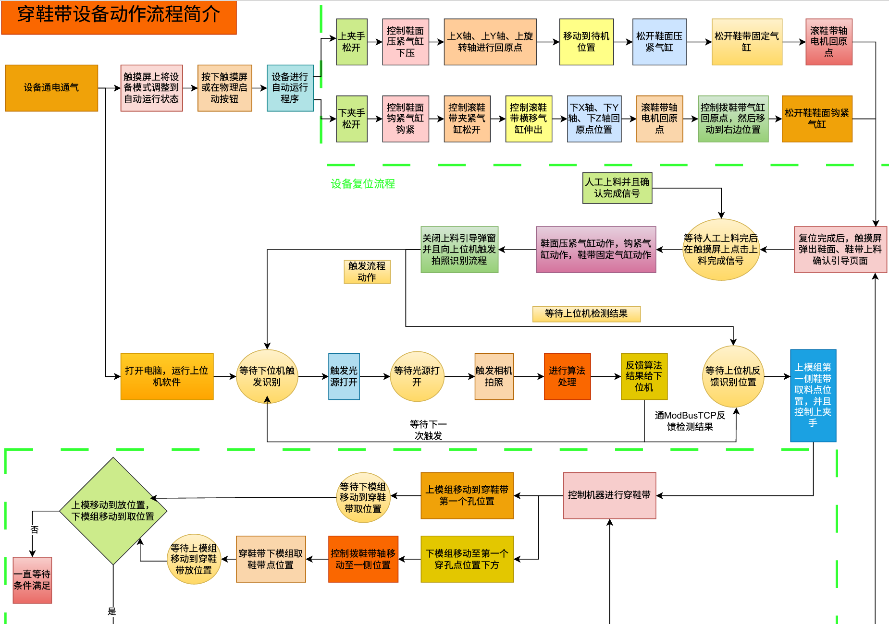
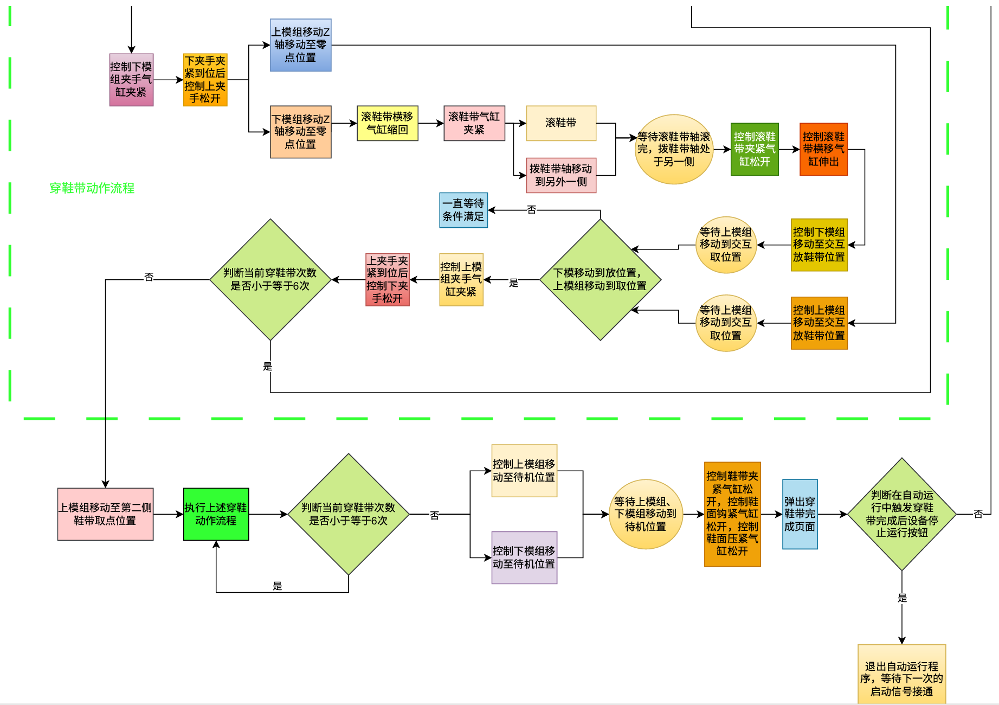
3.1.4. 设备主要功能参数
| 序号 | 核心项目 | 工艺技术参数要求 | 数据来源备注 |
|---|---|---|---|
| 1 | 加工对象外形规格 | 35码~42码 | 常见主流的鞋面尺码 |
| 2 | 视觉系统标定精度 | 可达 ±0.001 mm | 由标定与相机决定 |
| 3 | 工厂输入气源压力 | 工作气压：0.5 ~ 0.7 Mpa (上电规范 ≧ 0.6 Mba) | 需压力显示且可调节 |
| 4 | 工厂配电电压规范 | AC 220V，频率：50Hz | 必须配可靠接地 |
| 5 | 车间运转温湿度 | 工作温度：20 ~ 30 ℃ / 环境相对湿度：40% ~ 60% | 非无尘环境 |
| 6 | 设备噪声环保指标 | 整机全运转噪声规范 < 75dB | 符合国标 |
| 7 | 综合运行稳定性 | 稼动率 ≧ 95% / MTBF ﹥ 1000小时 / 寿命 ≧ 5年 | 工业级不间断连续量产 |
| 8 | 整机外形尺寸 | 1100mmX850mmX1850mm | 以实际设计为准 |
| 9 | CT | 目标CT：55S/只 |
3.1.5. 设备主要功能参数
| 序号 | 项目 | 工厂现场一次配接与对接标准 | 规范备注 |
|---|---|---|---|
| 1 | 安装应用场地 | 鞋厂—穿鞋带车间 | 独立运作，不关联他台 |
| 2 | 无尘与防护级别 | 非无尘净化车间 | 防油雾，无化学品 |
| 3 | 防静电与防火 | 整机外壳及基础地脚需防静电；防火等级符合国家标准 | 外壳及电器安装板可靠接地 |
| 4 | 外部动力接口预留 | 预留标准的电、气接口 | 便于安装及位置微调 |
3.2. 设备结构组成
3.2.1. 主机机架
主机机架由优质高标号型材经过高强度焊接总成、焊后将表面全部打磨平整，外部钣金保护外壳采用工业造型设计，表面实施多道均匀美观的防锈烤漆工艺，无色差与掉漆变形隐患。为防止由于各直线模组高速高动态行走所带来的细微机械共振，机架设计安装有高强度钢制台面板，所有机构安装在台面板上。防护门及可拆卸封板内侧设计有精密的卡口防漏灰挡边，活动封门均配有高可靠性按压式安全门锁。机架下层的内部电箱安装板与电箱之间通过高负荷螺柱焊接与螺母锁定，电气元件排列整齐标识清晰，并配有对流冷却风扇、安全护线套灯。机体下方坚固部署了 4 组支持可移动或长效固定的原装福马脚轮地脚。
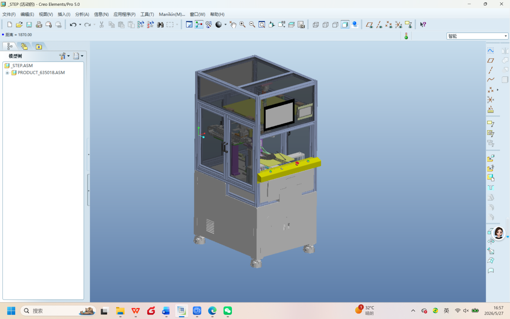
3.2.2. 主机防护罩
位于主机架上方，骨架由优质铝合金型材配有铝合金框架的门，防护罩的固定封板和门的封板都是由优质的透明PC板加工而成，操作面板安装在防护罩的正前上方，工业显示器和触摸屏安装在操作面板上，报警灯安装在防护罩上方角部位置。

3.2.3. 核心功能区细节
核心功能部件包括鞋面定位夹紧工装，上层X-Y-Z模组机械手+气动夹手，下层X-Y-Z模组机械手+气动夹手，下方拉绳和滚绳、拨绳装置，如图示：
鞋面、鞋带定位工装
下层X-Y-Z模组机械手

鞋面压紧装置
鞋根拉伸装置
鞋带下拉与举升装置
鞋带滚拉装置
鞋带拨动装置
鞋带居中压紧装置

3.2.4. 相机光源布置
| 序号 | 硬件子系统 | 精细化配置参数与结构设计 | 备注说明 |
|---|---|---|---|
| 1 | 顶部视觉相机配置 | 标配海康 MV-CS050-10GM 高性能工业相机，搭配低畸变高清工业镜头，物距保持在500-550mm。相机采用顶部垂直安装方式，针对鞋面工装进行居中布局设计，支持20mm垂直高度微调范围，可适配不同鞋型及工装高度变化需求。系统支持外部IO触发高速采集提高长时间连续运行稳定性。 | 视觉系统检测精度最高可达±0.001mm，在标准标定环境下具备高稳定性与重复检测一致性。支持高速连续图像采集，满足自动化产线长时间稳定运行需求。 |
| 2 | 多模式打光照明 | 采用顺尚信高功率定制光源方案。上方配置 KP-600-600-K50-W 150W 平面光源（照度0距离：5 |
光照环境均匀稳定，可有效抑制鞋面反光、阴影及局部过曝问题，提高图像边缘对比度与缺陷识别可靠性。支持长时间稳定运行，满足高精度机器视觉检测需求 |
下方平面补光光源
带中心孔的平面光源

3.2.4. 设备常见异常现象及现场处理建议
| 序号 | 异常现象 | 可能原因排查 | 推荐的现场标准化处理建议 |
|---|---|---|---|
| 1 | 上位机与PLC连接失败 | 连接网线损坏、上位机未通电、IP不通 | 检查电源、重新插拔网线、确认IP，并重启上位机。 |
| 2 | 相机实时无画面 | 软件采集未打开、相机驱动异常、屏蔽线缆松动 | 检查相机电源及物理连线、查看网卡采集状态并重启软件。 |
| 3 | 视觉识别加工偏移 | 标定文件失效、材料大幅起皱、镜头或支架发生位移 | 严禁移动相机支架，重新进行畸变校正和世界坐标标定。 |
| 4 | 空载或带载复位失败 | 工厂外部气压不足、到位传感器损坏、工装及各运动部件卡滞 | 确认总压力 ≧ 0.6Mba，排查传感器信号及限位、各运动轴、气缸状态。 |
4. 主要配件清单
| 序号 | 核心配件名称 | 标准数量(单位) | 选型品牌与关键规格技术备注 |
|---|---|---|---|
| 1 | PLC | 1 (套) | 型号：汇川 Easy 522-0808TN |
| 2 | 高性能步进电机套装 | 1 (套) | 雷赛智能 (DM3J-EC522) |
| 3 | 数字式步进电机及驱动套装 | 1 (套) | 雷赛 (闭环步进控制，用于通用型工装的电动调宽调节轴) |
| 4 | 1200W高分辨工业相机总成 | 1 (台) | 海康威视 (型号: MV-CS050-10GM) |
| 5 | 工业高清低畸变光学镜头 | 1 (个) | 海康威视(型号: MVL-MF2518M-5MPE) |
| 6 | 定制高功率工业光源及控制器 | 1 (套) | 上光源：顺尚信 (功率 ：150W，核心型号: KP-600-600-K50, 照度0距离5-7WLUX) 下光源：顺尚信 (功率 ：26W，核心型号: KP-200-200, 照度0距离6-8WLUX) 控制器(功率：200W,型号：KWDC2-24V200W-4HT) |
| 7 | 工控机及显示器 | 1 (台) | 工控机：爱宝拓酷睿i74500U(双网);8G/256G固态/WIFI 显示器：ZHIXIANDA(Q1516,分辨率1920*1080) |
| 8 | 直线模组 | 1批 | 成都西艾科斯智能科技有限公司：定制模组 |
5. 上位机软件及控制系统说明
5.1. 系统简介与主要功能
本设备配套“鞋绳穿孔系统”上位机软件，采用工业视觉识别、坐标标定换算与 Modbus TCP 通讯相结合的控制架构，面向鞋绳/鞋孔类产品的图像采集、点位识别、坐标输出及联机调试应用。操作人员通过本系统可完成页面切换、相机采图、图像识别、坐标查看、标定入口操作、寄存器监控及离线验证等工作。系统当前界面可见的核心功能如下：
● 主界面管理： 配备主页、鞋孔坐标页、Modbus 监控页等功能界面，界面分区清晰，便于操作人员快速进入对应工作模块。
● 相机控制： 实现相机设备查找、打开、关闭、连续采集、触发采集及单次软触发等完整采图控制功能。
● 图像参数调节： 支持对曝光、增益等关键成像参数进行读取与设置，以适配不同材质、不同光照及不同现场工况下的成像要求。
● 视觉识别： 对采集图像进行目标识别与点位提取，并将识别结果实时显示于图像界面，便于现场确认。
● 结果显示： 支持识别点位数量显示及多组坐标结果显示，便于人工校核和工艺确认。
● 通讯输出： 内置纯 C# 实现的 Modbus TCP 从站，对外提供保持寄存器读写接口，并将识别结果按固定寄存器地址写出。
● 结果留存： 支持保存原始图像与识别结果图，为后续质量追溯、工艺分析及项目归档提供数据支撑。
5.2. 主界面核心区域与按钮作用
| 主界面区域 / 按钮名称 | 具体控制作用与响应说明 |
|---|---|
| 图像窗口 | 显示相机的当前采集画面以及视觉识别计算结果 |
| 鞋孔坐标页 | 显示算法识别的点位以及可以将传递过去的点位相比较。 |
| Modbus监控页 | 用于查看寄存器实时值，也可手工写入地址和值做联调测试。 |
| 写入 | 在 Modbus 监控页手工写寄存器，用于模拟外部设备操作。 |
| 离线 | 直接对图片执行离线识别、坐标换算与寄存器写入，便于验证功能。 |
软件系统同步配备有图像显示与坐标结果展示方式：
pictureBox1： 主图像显示窗口，用于显示当前采集图像或识别后的结果图。
界面中预留了 12 个点位结果文本框，分别展示点1到点12的世界坐标。
识别后的结果图可叠加匹配点、轮廓或定位标记，便于判断算法效果是否正常。
5.3. 硬件控制拓扑与信号逻辑关系
本设备上位机软件系统通过工业以太网与现场控制层建立标准化通讯连接，并以工业相机、光源单元、视觉处理单元及外部控制系统构成完整的视觉识别与数据交互拓扑。各核心子系统之间的信号逻辑关系如下：
视觉成像中枢： 工业相机负责采集鞋绳/鞋孔区域的目标图像，并将图像数据实时传输至上位机视觉处理单元。图像显示窗口同步反馈当前采集画面及识别结果，为现场调试与状态确认提供直观依据。
光源协同单元： 系统设置上光源与下光源两路照明控制逻辑，通过寄存器命令实现开启、关闭与状态反馈，确保目标区域在不同工况下均可获得稳定、一致的成像条件，为识别精度提供基础保障。
视觉处理单元： 上位机软件作为系统核心处理平台，承担图像接收、参数调节、目标识别、点位提取、坐标换算、结果显示及通讯输出等关键任务，是整套视觉系统的数据决策中心。
工业通讯接口： 上位机通过 Modbus TCP 标准协议与 PLC 或外部控制系统进行数据交互，实现流程启动、状态反馈、识别结果输出及联机调试，具备良好的系统兼容性与集成便利性。
坐标输出单元： 识别完成后，系统将目标点位结果转换为标准世界坐标，并按约定寄存器区域顺序写入，供下位控制系统直接读取调用，从而形成视觉识别到执行控制之间的标准化数据通道。
5.4. 软件系统运行流程架构图
根据PLC与上位机联动控制，整机控制流程通过以下架构图形式表述：
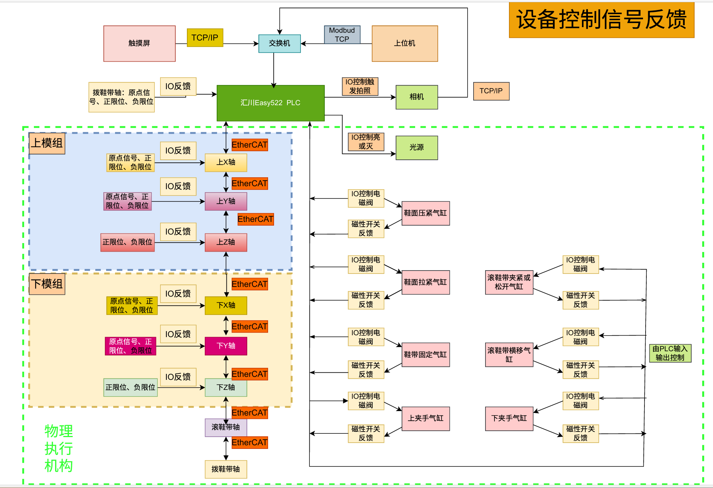
📜 授权协议
本仓库代码与文档采用 自定义商业禁止闭源协议 授权。
- ✅ 允许：个人学习、研究、非商业用途的引用与分发
- ❌ 禁止：商业闭源使用、未经授权的修改与再分发
详情见：LICENSE
深圳市英诺维信自动化设备有限公司
🏠 INVrobot 产品文档中心
"# 无缝筒子布激光裁切机
📄 本文档由 INVrobot 产品文档中心生成，仅供参考。
© 深圳市英诺维信自动化设备有限公司 本仓库代码与文档采用 自定义商业禁止闭源协议 授权， 禁止用于商业闭源目的。未经授权，不得修改、再分发或用于商业用途。
1. 设备简介
1.1. 设备名称
无缝筒子布激光裁切机设备
1.2. 设备来料情况
设备适用的物料特征及具体规格如下：
● 工作对象： 各类无缝筒子布。
● 规格范围： 宽度范围为 25~58 CM，长度最大值 MAX 75 CM。
1.3. 设备功能
本设备的核心功能涵盖以下几项关键自动化工序：
**● 双工位高效操作：**采用双工位交互结构，人工进行上料与下料操作，通过脚踏启动
（控制系统及硬件接口预留了升级空间，后期可扩展升级为机器人自动上下料）。
**● AI剪裁线智能识别：**深度集成视觉与深度学习算法，实现无缝筒子布正反面剪裁线
的全自动智能识别，并自动生成对应的激光裁切引导轨迹。
**● 高精密自动裁切：**采用配置的高性能激光系统，按照识别路径完成裁切线的内中外
的高精度的全自动激光裁切作业。
**● 集中联动自动排烟：**裁切工装自带废气排气接口，剪裁时自动联动工厂排风，实现
烟尘碎屑的高效排烟收集。
**● 信息化MES接入：**软件系统支持与工厂内部的 MES 系统无缝对接，实现设备运行
状态、产量数据的信息化管理。
**● 工装可电动调宽：**裁切工装具备高度通用性，可通过伺服控制根据配方自动进行宽
度精细调节。
2. 设备特点
整机的设计、生产与组装严格遵循以下工业级标准：
**● 九大总体设计原则：**设备研发完全围绕“标准化、模块化、可升级、低成本、可视化、
信息化、易维护、安全性、高效率”的原则闭环展开。
**● 长寿命高稼动率：**设备整体的工业设计寿命 ≧ 5 年，综合生产稼动率稳定保持95%
以上。
**● 极佳的抗故障稳定性：**设备的平均无故障工作时间 MTBF ﹥ 1000 小时，大幅降低
了停机维护成本。
**● 快捷的故障修复效率：**所有需要维修维护的部位皆具备良好的空间可达性与工具操作
空间，一般故障平均修复时间 MTTR ≤ 0.5h，重大故障平均修复时间 MTTR ≤ 24h。
3. 设备参数
3.1. 设备概述
3.1.1. 设备外观及功能分区
外壳整体具备专业的工业造型设计，焊缝平整美观，采用钣金结构辅以严密的表面烤漆防锈工艺，满足裁剪车间防静电与无尘化操作规范：
● 机架上部： 规划为多轴高速直线运动部件、相机、镜头、光源及激光头组件的精密组
装与定位安装台面。
● 机架下部： 独立合理规划为电控箱、工控机等电器控制系统的专业安全组装区域，位
置位于下方两侧或后侧。
● 设备正面： 合理排布有工业视觉检测显示器、设备操作触摸屏及常用控制按钮，下方
的上下料区空间高度完全便于人工无疲劳进行日常作业。
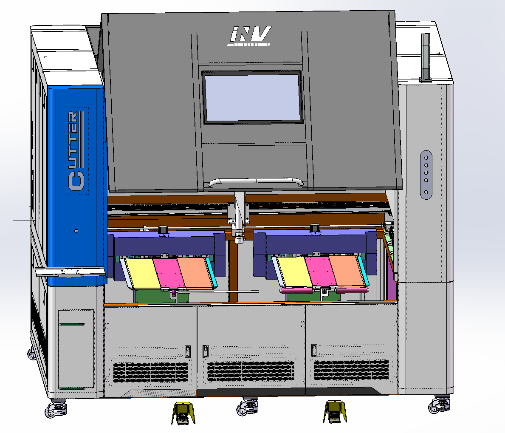


3.1.2. 设备清单
| 序号 | 部组 | 部件名称 | 核心规格 / 品牌选型 | 数量 | 单位 | 备注 |
|---|---|---|---|---|---|---|
| 1 | 主控系统 | 运动控制卡 | 正运动 | 1 | 套 | 多轴运动协调 |
| 2 | 核心驱动 | 伺服套装 | 汇川 | 1 | 套 | XY移动轴及旋转 |
| 3 | 工装宽度调节与翻转 | 步进套装 | 雷赛 | 1 | 套 | 通用工装板宽调节 |
| 4 | 智能视觉 | 工业相机 | 海康威视 (1200W像素，型号: MV-CH120-10GM) | 2 | 台 | 双相机独立识别 |
| 5 | 视觉组件 | 工业镜头 | 海康 / 欧克视光电 (型号: FA1216) | 2 | 个 | 工业低畸变 |
| 6 | 照明系统 | 光源及控制器 | 顺尚信 (定制，141.6W，型号: KCS-KP-600-500-K50-W) | 2 | 套 | 高清晰度识别 |
| 7 | 热管理 | 水冷机 / 冷水机 | 特域机电 (型号: CW-5200TH) | 1 | 台 | AC 1P 220-240V |
| 8 | 激光切削 | CO2激光器系统 | 永利激光 (含激光器YL-U2、激光管、激光头及光路) | 1 | 套 | 特定轨迹行走裁剪 |
| 9 | 地脚定位 | 可移动固定地脚 | 原厂定制福马脚轮 | 4 | 个 | 支持整机移动固定 |
| 10 | 系统运算 | 主控工控机 | 带独立显卡 (参考轮毂工控机配置指标)，高清大屏工业显示器 | 1 | 台 | 支持单独或触摸控制 |
3.1.3. 设备工艺流程
根据项目技术源码与设计说明，本设备的自动化运行与工艺维护细化分为以下三种独立的完整流程：
A. 标准规范的开机上电与换款调试流程
工厂气源接通： 首先接通裁剪车间的外部气源，使用调节阀确保主管道气源压力大于等于 0.6 Mba。
电气强电接通： 引入 AC 220V 或 AC 380V 设备总电源，将机体外部负荷开关手动打到“ON”状态。
内部弱电使能： 依次合上电控箱内部低压断路器，将弱电电源开关切换至接通状态。
系统层软件加载： 启动电脑工控机，运行上位机设备软件，软件自动通过网线连接多轴运动控制卡。
工艺配方参数调用： 软件联网读取当前的系统参数、轴配置参数以及上一次生产所保留的配方参数。
视觉及硬件初开： 软件底层初始化左/右相机连接，加载左右相机日常畸变校正参数与 A/B 工位世界坐标标定矩阵。
硬件释能与复位： 现场人员手动松开左、右两侧的硬件急停按钮，点击软件界面上的“复位”按钮，让整机执行一次完备的空载复位回零程序。
下拉换款与配方同步： 根据当前工艺任务，在主界面配方下拉框中选择对应产品配方，系统自动加载板宽、曝光、增益、激光功率和切割速度。
工装调宽与首件验证： 通用电调工装根据调宽参数自动调整夹持边界以完美匹配本次筒子布实际宽度（25~60CM）。人工放置试切样件，踩下脚踏启动加工，严格核对首件切割位置、尺寸与切边烧焦质量，确认合格后保存参数并切入连续量产模式。
B. 整机复位初始化与安全零位恢复流程
中断及输出关断： 当操作员下发复位指令或设备触发异常后，系统立即停止当前的一切轴向运动，并同步切断所有相关的输出信号。
软限位临时解除： 临时解除控制卡内部的软限位保护，防止各轴在执行大范围回零动作的过程中误触发软限位锁死。
XY机械工作台回零： 直线运动 XY 平台按安全步距回零，控制系统通常遵循先执行 X 轴回零、再执行 Y 轴回零的物理顺序。
机构安全姿态回归： A/B 双工位的托举机构（180度气缸）执行下降动作回到基础零位；同时 A/B 伸缩机构完全缩回，以防止干涉主轴回零。
到位信号安全检查： 控制卡持续检查各气缸和传感器的到位输入信号，严格确认托举和伸缩机构均已安全到达指定基准位。
**旋转轴使能与回零：**系统给A/B旋转轴伺服通电使能，控制旋转轴平稳执行回零动作。
板宽复位与软限位恢复： 板宽调整轴执行归零位置恢复，确定零点后重新启用软限位保护机制。
配方自适应开合： 系统读取当前加载配方的宽度指标，驱动雷赛步进轴自动将 A/B 工装板的调整板宽开合到位。
工位伸出待命： 双工位平稳伸出到标准准备工作状态，正面上位机软件切换为“可启动”状态提示。
C. 双工位自动加工标准循环流程
工位准备与上料： 操作员将无缝筒子布材料平稳放置到 A 或 B 工位，工位根据配方保持相应的夹持板宽，机构进入识别前的准备姿态，随后相应工位切入“等待拍照”状态。
联动打光调稳： 对应触发工位自动启动己侧的定制工业光源，系统软件在底层自动执行延时，等待光照完全稳定。
数字单次采图： 上位机输出精密相机触发信号，海康相机完成高质量的单次采图，图像数据被实时压入该工位的图像缓存或处理队列中。
畸变校正处理： 视觉识别线程实时读取最新缓存图像，并根据当前相机的物理标定参数自动执行镜头的畸变校正。
深度AI特征匹配： 软件自动加载当前产品配方对应的路径模型或识别模板，执行多点匹配或区域识别，经过亚像素级优化筛选，精准生成图像点坐标。
世界机械坐标转换： 视觉中枢读取当前工位的世界坐标标定矩阵，将计算出的图像点转换为物理世界坐标，并结合配方和板宽进行智能补偿。
运动队列下发： system 生成可供控制卡调用的物理坐标点集，并压入对应加工工位的运动控制队列中。
激光同步轨迹切割： XY 平台平稳读取待加工点集并联动运动至目标起始点，永利激光器功率按配方设置到位，激光跟随插补路径输出进行高能裁剪。
循环收尾出料： 轨迹运行加工结束后，软件关闭激光输出，XY平台退出加工危险区域，工装进退模组在缩回到位信号满足后驱动工位自动伸出到便于人工上下料的安全待机状态。

3.1.4. 设备主要功能参数
| 序号 | 核心项目 | 工艺技术参数要求 | 数据来源备注 |
|---|---|---|---|
| 1 | 加工对象外形规格 | 宽度：25 ~ 58 CM / 长度：最大 MAX 75 CM | 无缝筒子布物料 |
| 2 | 视觉系统标定精度 | 可达 ±0.001 mm | 由标定与相机决定 |
| 3 | 工厂输入气源压力 | 工作气压：0.5 ~ 0.7 Mpa (上电规范 ≧ 0.6 Mba) | 需压力显示且可调节 |
| 4 | 工厂配电电压规范 | AC 220V 或 AC 380V，频率：50Hz | 必须配可靠接地 |
| 5 | 车间运转温湿度 | 工作温度：20 ~ 30 ℃ / 环境相对湿度：40% ~ 60% | 非无尘，防静电环境 |
| 6 | 设备噪声环保指标 | 整机全运转噪声规范 < 80 dB | 符合国标，带强制排烟 |
| 7 | 综合运行稳定性 | 稼动率 ≧ 95% / MTBF ﹥ 1000小时 / 寿命 ≧ 5年 | 工业级不间断连续量产 |
| 8 | 机械架构框架尺寸 | （原厂加工设计图纸待最终归档敲定） | 参考3D与2D工程总图 |
3.1.5. 设备主要功能参数
| 序号 | 项目 | 工厂现场一次配接与对接标准 | 规范备注 |
|---|---|---|---|
| 1 | 安装应用车间 | 无缝针织工厂的专用裁剪车间 | 独立运作，不关联他台 |
| 2 | 无尘与防护级别 | 非无尘净化车间，现场必须配置高效排风排烟管道 | 防油雾，无化学品 |
| 3 | 防静电与防火 | 整机外壳及基础地脚需防静电；防火等级符合国家标准 | 外壳及垫板可靠接地 |
| 4 | 外部动力接口预留 | 预留标准的电、气、一次水及工厂吸风排烟总线接口 | 便于安装及位置微调 |
3.2. 设备结构组成
3.2.1. 主机机架及钣金外壳
机架由优质高标号型材经过高强度焊接总成、焊后将表面全部打磨平整，外部钣金保护外壳采用专业的现代工业造型设计，表面实施多道均匀美观的防锈烤漆工艺，无色差与掉漆变形隐患。为防止由于激光高速高动态行走所带来的细微机械共振，面积较大的钣金件内部均科学焊接有加强筋或抗振加强板。防护门及可拆卸封板内侧设计有精密的卡口防漏灰挡边，活动封门均配有高可靠性带调节螺丝的紧固按压式安全门锁。机架下层的内部电箱安装板与电箱之间通过高负荷螺柱焊接与螺母锁定，电气元件排列整齐标识清晰，并配有对流冷却风扇、安全护线套与LED箱内高亮照明灯。机体下方坚固部署了 4 组支持可移动或长效固定的原装福马脚轮地脚。
主机架如下图示：


方通焊接烤漆整体机架
外壳防护罩如下图示：
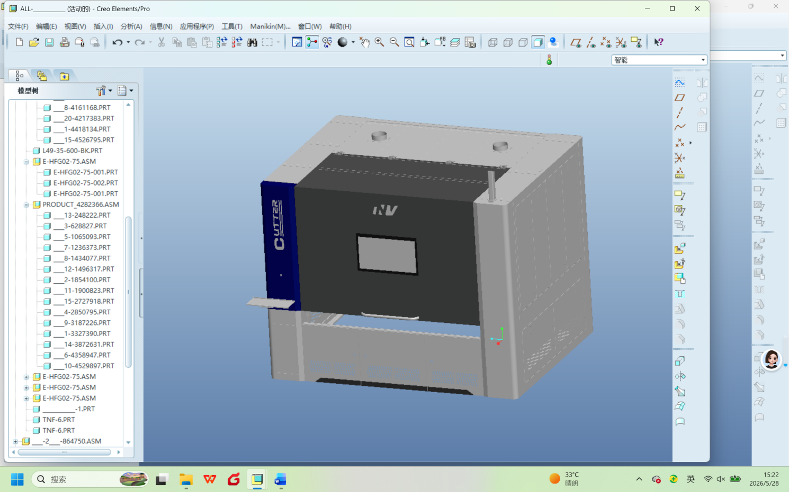
3.2.2. 上料及成品检验区
该区域位于设备正面操作面，操作高度和结构布局完全遵照人机工程学设计，主要由通用型电动可调变宽裁切工装、工装进退移动模组以及内含的排烟吸风管道精密组成。其中工装进退移动模组采用气动驱动，底座由 2 条坚固的双滑块直线导轨提供刚性支撑，并配有行程硬件限位开关及轻薄坦克链托链槽。工装核心结构融合了扩张、收缩与翻转，能有效带动筒子布物料在工装上实现张紧、放松与快速对位。整个工位在结构与控制链上均保留了标准的模块化接口，可随时向上升级兼容，无缝扩展机器人全自动上下料流水线。

3.2.3. 电调裁切工装
工装电动开合机构
工装可实现前进后退、翻转、工装板可扩张和收缩，以适应不同规格尺寸的筒子布自动裁切，工装构造如下：
工装进退装置（气动）
工装电动翻转机构
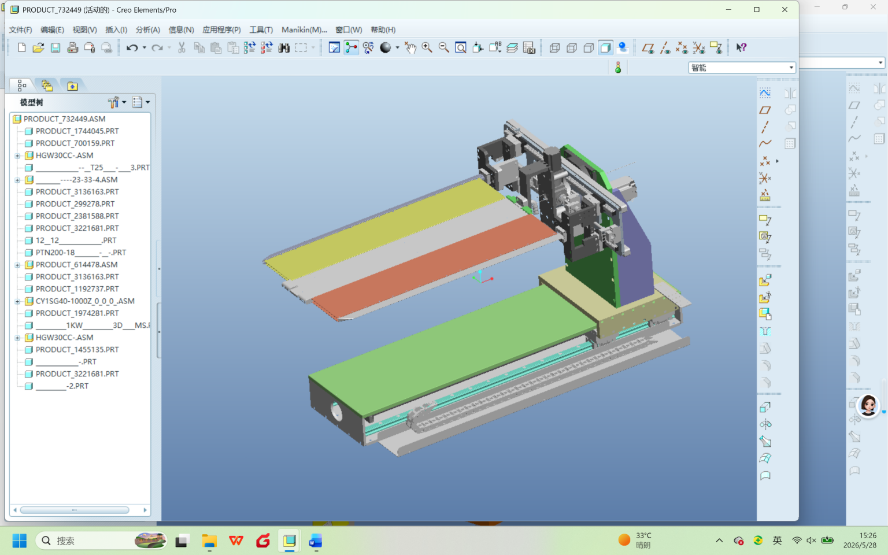
3.2.4. 运动平台与标定功能参数细节
| 序号 | 硬件子系统 | 精细化配置参数与结构设计 | 备注说明 |
|---|---|---|---|
| 1 | X-Y移动直线模组 | 前后X轴及左右Y轴均采用同步带高速直线模组配合大功率伺服驱动，同步带进行传动增速。运动末端及极限位置均配置限位开关与物理硬缓冲阻尼，电缆线束保护走轻薄随动坦克链。 | 刚性紧固件全部采用不锈钢材料 |
| 2 | 顶部视觉相机配置 | 标配海康机器人 1200W 高像素工业相机与低畸变高清镜头，物距保持在 1000~1200mm。垂直针对工装进行居中布置，设计有 100mm 的垂直高度微调范围，并支持加装相机专用空气冷却风管。 | 视觉系统检测精度达 ±0.001mm |
| 3 | 多模式打光照明 | 采用顺尚信高功率 141.6W 定制光源。支持方案：顶部开孔 2000mm×1300mm 双孔平面四面发光光源；每个工位周围都放置有补光板 | 光照环境稳定，防止图像反光过曝 |
3.2.5. 设备常见异常现象及现场处理建议
| 序号 | 异常现象 | 可能原因排查 | 推荐的现场标准化处理建议 |
|---|---|---|---|
| 1 | 控制卡连接失败 | 连接网线损坏、运动控制器未通电、IP不通 | 检查控制器电源、重新插拔网线、确认IP，并重启上位机。 |
| 2 | 相机实时无画面 | 软件采集未打开、相机驱动异常、屏蔽线缆松动 | 检查相机电源及物理连线、查看网卡采集状态并重启软件。 |
| 3 | 视觉识别加工偏移 | 标定文件失效、材料大幅起皱、镜头或支架发生位移 | 严禁移动相机支架，重新进行畸变校正和世界坐标标定。 |
| 4 | 空载或带载复位失败 | 工厂外部气压不足、到位传感器损坏、工装卡滞 | 确认总压力 ≧ 0.6Mba，排查传感器信号及限位、气缸状态。 |
| 5 | 物料切不断或烧边明显 | 速度与激光功率不匹配、焦距异常、材料批次变化 | 配合优化工艺配方参数，测量并校准光路，调整焦距。 |
****
4. 主要配件清单
| 序号 | 核心配件名称 | 标准数量(单位) | 选型品牌与关键规格技术备注 |
|---|---|---|---|
| 1 | 多轴高速联动运动控制卡 | 1 (套) | 正运动 (主控多轴插补、底层工艺逻辑与IO监控) |
| 2 | 高性能交流伺服电机套装 | 1 (套) | 汇川 (大惯量伺服，全面驱动XY模组及高动态旋转轴) |
| 3 | 数字式步进电机及驱动套装 | 1 (套) | 雷赛 (闭环步进控制，用于通用型工装的电动调宽调节轴) |
| 4 | 1200W高分辨工业相机总成 | 2 (台) | 海康威视 (型号: MV-CH120-10GM，左右相机独立并行采图) |
| 5 | 工业高清低畸变光学镜头 | 2 (个) | 欧克视 (上海) 光电 (型号: FA1216，高解析低畸变匹配) |
| 6 | 定制高功率工业光源及控制器 | 2 (套) | 顺尚信 (功率 141.6W，核心型号: KCS-KP-600-500-K50-W) |
| 7 | 激光专用恒温冷水机组件 | 1 (台) | 特域机电 (型号: CW-5200TH，AC单相 220V 精密水循环冷却) |
| 8 | CO2激光器核心物理系统 | 1 (套) | 永利激光 (高稳定激光器 YL-U2，含专用激光管、激光头及光路) |
5. 上位机软件及控制系统说明
5.1. 系统简介与主要功能
本设备配备“激光切割机 双相机 V12”上位机软件系统，这是一套带 A/B 双工位、双相机视觉识别、激光加工、多轴运动控制和气缸机构动作的完整控制中枢。操作人员通过该系统可高效完成配方切换、图像采集、相机标定、参数设置、自动加工、状态监控和安全异常处理。系统核心功能如下：
配方管理： 完整保存不同产品的尺寸、曝光、增益、激光功率、切割速度等核心工艺参数。
双相机控制： 实现左/右相机完全独立的图像采集、独立参数调节以及独立标定。
视觉定位： 自动执行镜头畸变校正、世界坐标标定、模板识别以及高精度的坐标转换。
运动控制： 精密驱动 XY 平台直线位移、A/B 工位旋转轴以及 A/B 工位板宽调整轴。
机构动作： 协调控制 A/B 工位托举机构的升降以及 A/B 工位伸缩机构的进退动作。
安全控制： 集成急停、复位、软硬限位保护、状态灯号、蜂鸣器和全面 IO 状态监控。
自动加工： 实现 A/B 双工位加工流程的多线程协同与并行高效运转。
5.2. 主界面核心区域与按钮作用
| 主界面区域 / 按钮名称 | 具体控制作用与响应说明 |
|---|---|
| 左图像窗口 / 右图像窗口 | 实时显示左相机、右相机的当前采集画面以及视觉识别计算结果 |
| 配方下拉框 | 用于快速选择当前生产的产品或对应的工艺配方。 |
| 启动 | 触发并开始整机双工位的全自动运行生产流程。 |
| 结束 | 平稳结束当前批次的运行，清空当前处理队列。 |
| 急停 | 立即停止所有机械轴的运动并关闭激光等相关控制输出。 |
| 复位 | 解除硬件急停状态后，重新执行整机轴回零、复位和机构恢复初始化。 |
| 左平台畸变校正 / 右平台畸变校正 | 用于左/右两侧相机的高精密镜头畸变参数标定。 |
| 世界坐标标定 | 用于将图像像素坐标系精准转换到机械世界物理坐标系。 |
| 系统设置 | 用于进入激光、轴参数及设备底层硬件配置界面。 |
| 状态监控 | 用于查看所有输入输出（IO）口的实时数字状态，辅助进行故障排查。 |
| 激光切割速度 | 实时查看或在线修改当前配方所绑定的激光切割速度。 |
软件系统同步配备有高显见度的三色状态灯号与蜂鸣器提示机制：
绿灯常亮： 设备当前正处于自动加工运行状态。
黄灯常亮： 设备处于空闲或待机准备状态。
黄灯闪烁或复位提示： 设备正在执行回零复位或机构恢复初始状态。
红灯常亮 + 蜂鸣器： 设备已进入急停锁死状态或触发了严重的异常报警。
蓝灯： 用于批次结束后的状态辅助提示。
5.3. 硬件控制拓扑与信号逻辑关系
上位机软件通过网线连接核心运动控制卡，以此构建整机拓扑网络。各子系统及元器件的底层信号交互逻辑如下：
视觉成像中枢： 左右两组相机通过独立网关将图像采集数据实时反馈给正面上位机软件。上位机通过控制卡 IO 输出口控制光源控制器的明暗开关。
激光动力中枢： 运动控制卡通过模拟量模块（输出 0-5V 模拟信号）精密调节激光电源控制器，进而实时控制激光器的输出功率；同步通过 IO 信号联动控制抽风泵、激光水冷机运转，以及控制吹气电磁阀的开闭。
总线运动轴系： 运动控制卡通过 EtherCAT 总线网络高速联动控制激光 X 轴伺服、激光 Y 轴伺服以及工位旋转轴伺服。各旋转轴均配置有一个专用的传感器用来精准锚定原点位置。
气动执行与反馈： 现场配有左/右脚踏控制按钮。当按下脚踏时，控制卡输出 IO 命令给对应侧的电磁阀，驱动平台伸出/缩回气缸以及托举机构（180度气缸）动作，气缸的两端动作到位信号通过磁性开关实时反馈给上位机。
工装板宽电调： 左右两侧的平台张开机构采用闭环步进电机驱动。其调整边界由前后两个高灵敏限位开关进行位置约束，并将限位状态实时反馈给上位机。工装上的布料多级循环进退由旋转杆1和旋转杆2闭环步进轴系同步协调驱动。
5.4. 软件系统运行流程架构图
根据上位机控制源码与软件执行线程结构，整机控制流程通过以下架构图形式表述：

📜 授权协议
本仓库代码与文档采用 自定义商业禁止闭源协议 授权。
- ✅ 允许：个人学习、研究、非商业用途的引用与分发
- ❌ 禁止：商业闭源使用、未经授权的修改与再分发
详情见：LICENSE
深圳市英诺维信自动化设备有限公司
🏠 INVrobot 产品文档中心